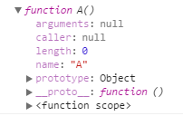
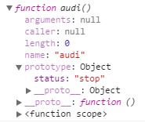
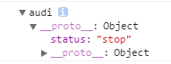
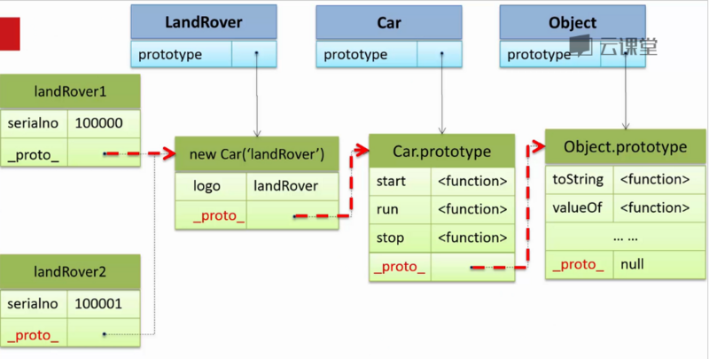
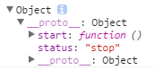
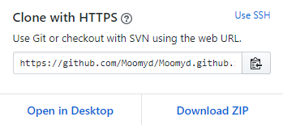

<!DOCTYPE html>
<html>
<head><meta name="generator" content="Hexo 3.9.0">
  <meta charset="utf-8">
  

  
  <title>zmy&#39;s Blog</title>
  <meta name="viewport" content="width=device-width, initial-scale=1, maximum-scale=1">
  <meta property="og:type" content="website">
<meta property="og:title" content="zmy&#39;s Blog">
<meta property="og:url" content="http://yoursite.com/page/2/index.html">
<meta property="og:site_name" content="zmy&#39;s Blog">
<meta property="og:locale" content="zh-Hans">
<meta name="twitter:card" content="summary">
<meta name="twitter:title" content="zmy&#39;s Blog">
  
    <link rel="alternate" href="/atom.xml" title="zmy&#39;s Blog" type="application/atom+xml">
  
  
    <link rel="icon" href="/favicon.png">
  
  
    <link href="//fonts.googleapis.com/css?family=Source+Code+Pro" rel="stylesheet" type="text/css">
  
  <link rel="stylesheet" href="/css/style.css">
</head>
</html>
<body>
  <div id="container">
    <div id="wrap">
      <header id="header">
  <div id="banner"></div>
  <div id="header-outer" class="outer">
    <div id="header-title" class="inner">
      <h1 id="logo-wrap">
        <a href="/" id="logo">zmy&#39;s Blog</a>
      </h1>
      
        <h2 id="subtitle-wrap">
          <a href="/" id="subtitle">active waste</a>
        </h2>
      
    </div>
    <div id="header-inner" class="inner">
      <nav id="main-nav">
        <a id="main-nav-toggle" class="nav-icon"></a>
        
          <a class="main-nav-link" href="/">Home</a>
        
          <a class="main-nav-link" href="/archives">Archives</a>
        
      </nav>
      <nav id="sub-nav">
        
          <a id="nav-rss-link" class="nav-icon" href="/atom.xml" title="RSS Feed"></a>
        
        <a id="nav-search-btn" class="nav-icon" title="Search"></a>
      </nav>
      <div id="search-form-wrap">
        <form action="//google.com/search" method="get" accept-charset="UTF-8" class="search-form"><input type="search" name="q" class="search-form-input" placeholder="Search"><button type="submit" class="search-form-submit">&#xF002;</button><input type="hidden" name="sitesearch" value="http://yoursite.com"></form>
      </div>
    </div>
  </div>
</header>
      <div class="outer">
        <section id="main">
  
    <article id="post-生成器" class="article article-type-post" itemscope itemprop="blogPost">
  <div class="article-meta">
    <a href="/2020/04/05/生成器/" class="article-date">
  <time datetime="2020-04-04T17:29:39.912Z" itemprop="datePublished">2020-04-05</time>
</a>
    
  <div class="article-category">
    <a class="article-category-link" href="/categories/js/">js</a>
  </div>

  </div>
  <div class="article-inner">
    
    
      <header class="article-header">
        
  
    <h1 itemprop="name">
      <a class="article-title" href="/2020/04/05/生成器/">未来函数</a>
    </h1>
  

      </header>
    
    <div class="article-entry" itemprop="articleBody">
      
        <h2 id="生成器函数"><a href="#生成器函数" class="headerlink" title="生成器函数"></a>生成器函数</h2><p>生成器（generator）是一种特殊类型的函数。当从头到尾运行标准函数时，它最多只生成一个值。然而生成器函数会在几次运行请求中暂停，因此每次运行都可能会生成一个值。</p>
<figure class="highlight javascript"><table><tr><td class="gutter"><pre><span class="line">1</span><br><span class="line">2</span><br><span class="line">3</span><br><span class="line">4</span><br><span class="line">5</span><br><span class="line">6</span><br><span class="line">7</span><br><span class="line">8</span><br><span class="line">9</span><br><span class="line">10</span><br></pre></td><td class="code"><pre><span class="line"><span class="function"><span class="keyword">function</span>* <span class="title">myGenertor</span>(<span class="params"></span>)</span>&#123;</span><br><span class="line">   <span class="keyword">yield</span> <span class="string">'test1'</span>;</span><br><span class="line">   <span class="keyword">yield</span> <span class="string">'test2'</span>;</span><br><span class="line">   <span class="keyword">yield</span> <span class="string">'test3'</span>;</span><br><span class="line">&#125;</span><br><span class="line"></span><br><span class="line"><span class="keyword">for</span>(<span class="keyword">let</span> aa <span class="keyword">of</span> myGenertor())&#123;</span><br><span class="line">   <span class="built_in">console</span>.log(aa)</span><br><span class="line">&#125;</span><br><span class="line"><span class="comment">//test1、test2、test3</span></span><br></pre></td></tr></table></figure>

<p>在定义函数的时候在function后面加一个*表示这是一个生成器函数，并通过关键字yield返回相应的值，可以通过它来指定调用迭代器的next()方法时的返回值及返回顺序。并且，对于生成器函数来说，它不会像普通函数一样停止执行，而是当一个值的请求到来后，生成器就会从上次离开的地方继续开始执行。</p>
<figure class="highlight javascript"><table><tr><td class="gutter"><pre><span class="line">1</span><br><span class="line">2</span><br><span class="line">3</span><br><span class="line">4</span><br><span class="line">5</span><br><span class="line">6</span><br><span class="line">7</span><br><span class="line">8</span><br><span class="line">9</span><br><span class="line">10</span><br><span class="line">11</span><br></pre></td><td class="code"><pre><span class="line"><span class="function"><span class="keyword">function</span>* <span class="title">myGenertor</span>(<span class="params"></span>)</span>&#123;</span><br><span class="line">    <span class="keyword">var</span> bb = <span class="number">1</span>;</span><br><span class="line">    <span class="keyword">yield</span> bb;</span><br><span class="line">    bb++;</span><br><span class="line">    <span class="keyword">yield</span> bb;</span><br><span class="line">    <span class="keyword">yield</span> bb;</span><br><span class="line"> &#125;</span><br><span class="line"> </span><br><span class="line"> <span class="keyword">for</span>(<span class="keyword">let</span> aa <span class="keyword">of</span> myGenertor())&#123;</span><br><span class="line">    <span class="built_in">console</span>.log(aa)</span><br><span class="line"> &#125;<span class="comment">//1、2、2</span></span><br></pre></td></tr></table></figure>

<p>从上面这个例子可知，第一次调用myGenenrtor这个生成器函数的时候，首先定义了一个名为bb的变量并且初始化为1，然后将这个值返回。第二次调用的时候，生成器不会像普通函数那样，再次从函数的开始执行，而是从上次执行的语句之后又开始执行b++，并返回此时bb的值为2.然后继续这个过程，返回的值是2</p>
<h2 id="通过迭代对象控制生成器"><a href="#通过迭代对象控制生成器" class="headerlink" title="通过迭代对象控制生成器"></a>通过迭代对象控制生成器</h2><p>在 JavaScript 中，迭代器是一个对象，它定义一个序列，并在终止时可能返回一个返回值。 更具体地说，迭代器是通过使用 next() 方法实现 Iterator protocol 的任何一个对象，该方法返回具有两个属性的对象： value，这是序列中的 next 值；和 done ，如果已经迭代到序列中的最后一个值，则它为 true 。如果 value 和 done 一起存在，则它是迭代器的返回值。</p>
<figure class="highlight javascript"><table><tr><td class="gutter"><pre><span class="line">1</span><br><span class="line">2</span><br><span class="line">3</span><br><span class="line">4</span><br><span class="line">5</span><br><span class="line">6</span><br><span class="line">7</span><br><span class="line">8</span><br><span class="line">9</span><br><span class="line">10</span><br><span class="line">11</span><br><span class="line">12</span><br><span class="line">13</span><br><span class="line">14</span><br><span class="line">15</span><br><span class="line">16</span><br><span class="line">17</span><br><span class="line">18</span><br></pre></td><td class="code"><pre><span class="line"><span class="function"><span class="keyword">function</span>* <span class="title">myGenertor</span>(<span class="params"></span>)</span>&#123;</span><br><span class="line">    <span class="keyword">var</span> bb = <span class="number">1</span>;</span><br><span class="line">    <span class="keyword">yield</span> bb;</span><br><span class="line">    bb++;</span><br><span class="line">    <span class="keyword">yield</span> bb;</span><br><span class="line"> &#125;</span><br><span class="line"> </span><br><span class="line"><span class="keyword">var</span> myIterator = myGenertor();</span><br><span class="line"><span class="built_in">console</span>.log(myIterator);</span><br><span class="line"><span class="built_in">console</span>.log(myIterator.next())</span><br><span class="line"></span><br><span class="line"><span class="built_in">console</span>.log(myIterator.next())</span><br><span class="line"><span class="built_in">console</span>.log(myIterator.next())</span><br><span class="line"><span class="comment">//执行的结果为</span></span><br><span class="line"><span class="comment">//&#123;&#125;</span></span><br><span class="line"><span class="comment">//&#123; value: 1, done: false &#125;</span></span><br><span class="line"><span class="comment">//&#123; value: 2, done: false &#125;</span></span><br><span class="line"><span class="comment">//&#123; value: undefined, done: true &#125;</span></span><br></pre></td></tr></table></figure>

<p>在上面这个例子中，依然定义了一个生成器函数myGenertor，接下来调用这个生成器函数，就创建了一个迭代器。对这个对象执行接口方法next(),当代码执行到yield关键字的时候，生成一个中间结果并且返回一个新的对象，其中封装了一个结果值和指示完成的指示器。每当生成器生成一个值之后，生成器就会非阻塞挂起，等待下一次请求的到达。当没有可执行的代码的时候，生成器就会返回一个value为“undefined”，done为true的值，表示他的状态已完成。</p>
<h2 id="利用生成器函数把执行权交给下一个生成器"><a href="#利用生成器函数把执行权交给下一个生成器" class="headerlink" title="利用生成器函数把执行权交给下一个生成器"></a>利用生成器函数把执行权交给下一个生成器</h2><figure class="highlight javascript"><table><tr><td class="gutter"><pre><span class="line">1</span><br><span class="line">2</span><br><span class="line">3</span><br><span class="line">4</span><br><span class="line">5</span><br><span class="line">6</span><br><span class="line">7</span><br><span class="line">8</span><br><span class="line">9</span><br><span class="line">10</span><br><span class="line">11</span><br><span class="line">12</span><br><span class="line">13</span><br><span class="line">14</span><br><span class="line">15</span><br><span class="line">16</span><br><span class="line">17</span><br><span class="line">18</span><br><span class="line">19</span><br><span class="line">20</span><br></pre></td><td class="code"><pre><span class="line"><span class="function"><span class="keyword">function</span>* <span class="title">g1</span>(<span class="params"></span>) </span>&#123;</span><br><span class="line">  <span class="keyword">yield</span> <span class="number">2</span>;</span><br><span class="line">  <span class="keyword">yield</span> <span class="number">3</span>;</span><br><span class="line">  <span class="keyword">yield</span> <span class="number">4</span>;</span><br><span class="line">&#125;</span><br><span class="line"></span><br><span class="line"><span class="function"><span class="keyword">function</span>* <span class="title">g2</span>(<span class="params"></span>) </span>&#123;</span><br><span class="line">  <span class="keyword">yield</span> <span class="number">1</span>;</span><br><span class="line">  <span class="keyword">yield</span>* g1();</span><br><span class="line">  <span class="keyword">yield</span> <span class="number">5</span>;</span><br><span class="line">&#125;</span><br><span class="line"></span><br><span class="line"><span class="keyword">var</span> iterator = g2();</span><br><span class="line"></span><br><span class="line"><span class="built_in">console</span>.log(iterator.next()); <span class="comment">// &#123; value: 1, done: false &#125;</span></span><br><span class="line"><span class="built_in">console</span>.log(iterator.next()); <span class="comment">// &#123; value: 2, done: false &#125;</span></span><br><span class="line"><span class="built_in">console</span>.log(iterator.next()); <span class="comment">// &#123; value: 3, done: false &#125;</span></span><br><span class="line"><span class="built_in">console</span>.log(iterator.next()); <span class="comment">// &#123; value: 4, done: false &#125;</span></span><br><span class="line"><span class="built_in">console</span>.log(iterator.next()); <span class="comment">// &#123; value: 5, done: false &#125;</span></span><br><span class="line"><span class="built_in">console</span>.log(iterator.next()); <span class="comment">// &#123; value: undefined, done: true &#125;</span></span><br></pre></td></tr></table></figure>

<p>​ 上面这个实例中，在迭代器上使用yield*操作符，程序会跳转到另一个生成器上执行，这一切对于最初调用的迭代器而言都是透明的。</p>
<h2 id="生成器异常和处理"><a href="#生成器异常和处理" class="headerlink" title="生成器异常和处理"></a>生成器异常和处理</h2><figure class="highlight javascript"><table><tr><td class="gutter"><pre><span class="line">1</span><br><span class="line">2</span><br><span class="line">3</span><br><span class="line">4</span><br><span class="line">5</span><br><span class="line">6</span><br><span class="line">7</span><br><span class="line">8</span><br><span class="line">9</span><br><span class="line">10</span><br><span class="line">11</span><br><span class="line">12</span><br><span class="line">13</span><br><span class="line">14</span><br><span class="line">15</span><br></pre></td><td class="code"><pre><span class="line"><span class="function"><span class="keyword">function</span>* <span class="title">myGenerator</span>(<span class="params">data</span>)</span>&#123;</span><br><span class="line">    <span class="keyword">try</span>&#123;</span><br><span class="line">        <span class="keyword">yield</span> <span class="string">"hello"</span>;</span><br><span class="line">    &#125;<span class="keyword">catch</span>(e)&#123;</span><br><span class="line">        <span class="built_in">console</span>.log(<span class="string">"出错了！！"</span> + e)</span><br><span class="line">    &#125;</span><br><span class="line">&#125;</span><br><span class="line"><span class="keyword">const</span> test1 = myGenerator();</span><br><span class="line"><span class="built_in">console</span>.log(test1.next());</span><br><span class="line">test1.throw(<span class="string">"迭代器抛出了一个错误"</span>);</span><br><span class="line"></span><br><span class="line"></span><br><span class="line"><span class="comment">//  运行结果：</span></span><br><span class="line"><span class="comment">// &#123; value: 'hello', done: false &#125;</span></span><br><span class="line"><span class="comment">// 出错了！！迭代器抛出了一个错误</span></span><br></pre></td></tr></table></figure>

<p>这里将生成器中全部的代码装入try-catch块中去。在创建了迭代器之后，通过调用迭代器中的throw方法抛出异常，并利用生成器函数中的catch语句进行异常的接受和处理。</p>
<h2 id="生成器的内部构成"><a href="#生成器的内部构成" class="headerlink" title="生成器的内部构成"></a>生成器的内部构成</h2><ul>
<li>挂起开始</li>
<li>执行</li>
<li>挂起让渡，在生成器执行中遇到一个yield表达式，会创建一个包含返回值的新对象，随后挂起</li>
<li>完成</li>
</ul>
<p>当我们从生成器中取得控制权后，生成器的执行环境上下文一直都保存着。</p>
<h2 id="使用promise"><a href="#使用promise" class="headerlink" title="使用promise"></a>使用promise</h2><p>promise对象是对我们现在未得到但将来会得到值的占位符，是我们最终能够得知异步计算结果的一种保证。</p>
<p>回调函数处理异步的问题：错误难以处理，执行连续步骤非常棘手，执行许多并行任务很复杂。</p>
<p>promise经历的状态：</p>
<ul>
<li>等待也称为未实现</li>
<li>如果resolve被调用，进入完成状态，在该状态下获得了承诺的值</li>
<li>如果reject调用或者一个未处理的异常发生，进入拒绝状态</li>
</ul>
<p>promise.all接受一个 promises数组，如果都成功返回成功<br>promise.race只关心第一个成功的promise</p>

      
    </div>
    <footer class="article-footer">
      <a data-url="http://yoursite.com/2020/04/05/生成器/" data-id="ckhkn9xmi0013iwsnu6lh8w2l" class="article-share-link">Share</a>
      
      
  <ul class="article-tag-list"><li class="article-tag-list-item"><a class="article-tag-list-link" href="/tags/promise/">promise</a></li><li class="article-tag-list-item"><a class="article-tag-list-link" href="/tags/生成器/">生成器</a></li></ul>

    </footer>
  </div>
  
</article>


  
    <article id="post-面向对象与原型" class="article article-type-post" itemscope itemprop="blogPost">
  <div class="article-meta">
    <a href="/2020/04/04/面向对象与原型/" class="article-date">
  <time datetime="2020-04-04T05:57:37.000Z" itemprop="datePublished">2020-04-04</time>
</a>
    
  <div class="article-category">
    <a class="article-category-link" href="/categories/js/">-js</a>
  </div>

  </div>
  <div class="article-inner">
    
    
      <header class="article-header">
        
  
    <h1 itemprop="name">
      <a class="article-title" href="/2020/04/04/面向对象与原型/">面向对象的封装继承</a>
    </h1>
  

      </header>
    
    <div class="article-entry" itemprop="articleBody">
      
        <h1 id="js面型对象编程"><a href="#js面型对象编程" class="headerlink" title="js面型对象编程"></a>js面型对象编程</h1><h2 id="原型继承"><a href="#原型继承" class="headerlink" title="原型继承"></a>原型继承</h2><p>与其它编程语言不一样的是，javascript的面向对象并非依赖于抽象的类，而是通过原型链，将一个个具体的对象实例进行连接，位于原型链下游的对象实例可以读取/使用位于上游的对象实例的属性/方法。<br>万物之源：js的原生类型–object<br>javascript定义了最基础的对象类型Object，并且为这一对象类型定义了许多成员方法。其它许多原生对象类型，实际上都是继承自Object，比如说Function、Date等。</p>
<h3 id="生成对象实例的new和构造函数constructor"><a href="#生成对象实例的new和构造函数constructor" class="headerlink" title="生成对象实例的new和构造函数constructor"></a>生成对象实例的new和构造函数constructor</h3><p>在其它编程语言中，new往往也是用来生成对象实例的，用法一般是这样：new ClassName[([arguments])]，而生成出来的对象实例也被冠以“ClassName对象”这样的称谓；而javascript则大不相同，由于原生没有类这一概念，因此构造函数便取而代之：new constructor[([arguments])]，称谓也改为“constructor对象”或”constructor类型的对象”，构造函数名直接就等同于数据类型</p>
<figure class="highlight javascript"><table><tr><td class="gutter"><pre><span class="line">1</span><br><span class="line">2</span><br><span class="line">3</span><br></pre></td><td class="code"><pre><span class="line"><span class="function"><span class="keyword">function</span> <span class="title">A</span>(<span class="params"></span>) </span>&#123;&#125;    <span class="comment">//有一函数名A。（若是用来生成对象，则称为构造函数）</span></span><br><span class="line"><span class="keyword">var</span> obj = <span class="keyword">new</span> A();    <span class="comment">//使用构造函数A来生成实例对象obj</span></span><br><span class="line"><span class="built_in">console</span>.dir(obj);    <span class="comment">//打印实例对象obj</span></span><br></pre></td></tr></table></figure>

<h4 id="构造函数"><a href="#构造函数" class="headerlink" title="构造函数"></a>构造函数</h4><p>要想生成对象实例，必须使用构造函数(constructor)，即便是var arr = [];或var obj = {}这样的形式，javascript也会在内部调用Function()、Object()这样预设的构造函数（由于是预设的构造函数/数据类型，因此不需显式指定）。</p>
<p></p>
<p>我们略过一些与面向对象无关的属性（arguments/caller/length/name），以及其函数作用域(<function scope>)，剩下的就是与面向对象息息相关的俩属性了：prototype和<strong>proto</strong>。</function></p>
<h4 id="构造函数中的prototype属性"><a href="#构造函数中的prototype属性" class="headerlink" title="构造函数中的prototype属性"></a>构造函数中的prototype属性</h4><p>prototype属性指定了使用该构造函数生成的对象实例继承了哪个对象实例。<br>用function A()作为构造函数实例化的obj实际上就是继承了那默认的Object类型的对象实例，虽然obj本身并没有自定义的属性/方法，但是能通过obj调用继承回来的所有属性/方法。</p>
<h4 id="对象继承的单向链条：原型链"><a href="#对象继承的单向链条：原型链" class="headerlink" title="对象继承的单向链条：原型链"></a>对象继承的单向链条：原型链</h4><p>既然构造函数的prototype属性能指定继承的对象实例，那么只要我们修改这prototype属性，使其指向其它对象实例，那么就可以达到实现继承任意对象的效果了</p>
<figure class="highlight javascript"><table><tr><td class="gutter"><pre><span class="line">1</span><br><span class="line">2</span><br><span class="line">3</span><br><span class="line">4</span><br><span class="line">5</span><br><span class="line">6</span><br><span class="line">7</span><br><span class="line">8</span><br></pre></td><td class="code"><pre><span class="line"><span class="keyword">var</span> car = &#123;    <span class="comment">//一个普通的Object类型实例对象</span></span><br><span class="line">    status: <span class="string">'stop'</span></span><br><span class="line">&#125;</span><br><span class="line"><span class="function"><span class="keyword">function</span> <span class="title">audi</span>(<span class="params"></span>) </span>&#123;&#125;    <span class="comment">//构造函数audi</span></span><br><span class="line">audi.prototype = car;    <span class="comment">//修改构造函数audi的prototype属性，使其指向car</span></span><br><span class="line"><span class="built_in">console</span>.dir(audi);</span><br><span class="line"><span class="keyword">var</span> audiQ3 = <span class="keyword">new</span> audi();    <span class="comment">//利用构造函数audi生成的数据类型为audi的实例对象</span></span><br><span class="line"><span class="built_in">console</span>.dir(audiQ3);</span><br></pre></td></tr></table></figure>

<p>audi的结果<br></p>
<p>从audi.prototype.status可以看出，此时的audi.prototype的确是指向{status: ‘stop’}这个对象实例了。<br>audiQ3：<br></p>
<p>audiQ3这一实例对象的数据类型是audi（与构造函数同名），另外，audiQ3其下只有<strong>proto</strong>这唯一一个成员属性，继续查看<strong>proto</strong>，里面有status: “stop”。<strong>proto</strong>属性是指向{status: ‘stop’}这个对象实例的一个引用。</p>
<h4 id="原型链的接点：proto"><a href="#原型链的接点：proto" class="headerlink" title="原型链的接点：proto"></a>原型链的接点：<em>proto</em></h4><p>通过对象实例中的<strong>proto</strong>属性，继承的对象实例得以与被继承的对象实例链接起来，于是，一环扣一环，形成了一条由对象实例、指向被继承对象实例的引用所构成的链条：原型链。</p>
<p></p>
<p>由于<strong>proto</strong>是由构造函数的prototype属性决定的（也可以说是prototype直接赋值给<strong>proto</strong>），因此我们可以通过修改prototype属性来操纵这条原型链。</p>
<h4 id="js原生支持的原型继承方式-Object-create"><a href="#js原生支持的原型继承方式-Object-create" class="headerlink" title="js原生支持的原型继承方式:Object.create"></a>js原生支持的原型继承方式:Object.create</h4><p>ECMAScript 5定义了一种原生的原型继承方式:Object.create，我们可以通过这种方式更简便地实现原型继承。<br>语法：<br>Object.create(proto, [ propertiesObject ])<br>参数：<br>proto 一个对象，作为新创建对象的原型。<br>propertiesObject 可选。该参数对象是一组属性与值，该对象的属性名称将是新创建的对象的属性名称，值是属性描述符（这些属性描述符的结构与Object.defineProperties()的第二个参数一样）。注意：该参数对象不能是undefined，另外只有该对象中自身拥有的可枚举的属性才有效，也就是说该对象的原型链上属性是无效的。</p>
<figure class="highlight javascript"><table><tr><td class="gutter"><pre><span class="line">1</span><br><span class="line">2</span><br><span class="line">3</span><br><span class="line">4</span><br><span class="line">5</span><br><span class="line">6</span><br><span class="line">7</span><br><span class="line">8</span><br></pre></td><td class="code"><pre><span class="line"><span class="keyword">var</span> car = &#123;</span><br><span class="line">    status: <span class="string">'stop'</span>,</span><br><span class="line">    start: <span class="function"><span class="keyword">function</span>(<span class="params"></span>) </span>&#123;</span><br><span class="line">        <span class="keyword">this</span>.status = <span class="string">'running'</span></span><br><span class="line">    &#125;</span><br><span class="line">&#125;</span><br><span class="line"><span class="keyword">var</span> audiQ3 = <span class="built_in">Object</span>.create(car);</span><br><span class="line"><span class="built_in">console</span>.dir(audiQ3);</span><br></pre></td></tr></table></figure>

<p></p>
<p>实际上，这是ECMAScript 5给我们做了一下封装，相当于：</p>
<figure class="highlight javascript"><table><tr><td class="gutter"><pre><span class="line">1</span><br><span class="line">2</span><br><span class="line">3</span><br><span class="line">4</span><br><span class="line">5</span><br></pre></td><td class="code"><pre><span class="line"><span class="function"><span class="keyword">function</span> (<span class="params">proto</span>) </span>&#123;</span><br><span class="line">  <span class="keyword">var</span> <span class="keyword">constructor</span> = function()&#123;&#125;</span><br><span class="line">  <span class="keyword">constructor</span>.prototype = proto;</span><br><span class="line">  return new <span class="keyword">constructor</span>();</span><br><span class="line">&#125;</span><br></pre></td></tr></table></figure>

<h2 id="封装"><a href="#封装" class="headerlink" title="封装"></a>封装</h2><p>封装：把客观事物封装成抽象的类，隐藏属性和方法的实现细节，仅对外公开接口。<br>模拟class概念。类其实就是保存了一个函数的变量这个函数有自己的属性和方法。将属性和方法组成一个类的过程就是封装</p>
<h3 id="通过构造函数"><a href="#通过构造函数" class="headerlink" title="通过构造函数"></a>通过构造函数</h3><p>javascript提供了一个构造函数（Constructor）模式，用来在创建对象时初始化对象。<br>构造函数的特点：</p>
<ul>
<li>首字母大写（建议构造函数首字母大写，即使用大驼峰命名，非构造函数首字母小写）</li>
<li>内部使用this</li>
<li>使用 new生成实例<br>通过构造函数添加属性和方法实际上也就是通过this添加属性和方法。<figure class="highlight javascript"><table><tr><td class="gutter"><pre><span class="line">1</span><br><span class="line">2</span><br><span class="line">3</span><br><span class="line">4</span><br><span class="line">5</span><br><span class="line">6</span><br><span class="line">7</span><br><span class="line">8</span><br><span class="line">9</span><br></pre></td><td class="code"><pre><span class="line"><span class="function"><span class="keyword">function</span> <span class="title">Cat</span>(<span class="params">name,color</span>)</span>&#123;</span><br><span class="line">        <span class="keyword">this</span>.name = name;</span><br><span class="line">        <span class="keyword">this</span>.color = color;</span><br><span class="line">        <span class="keyword">this</span>.eat = <span class="function"><span class="keyword">function</span> (<span class="params"></span>) </span>&#123;</span><br><span class="line">            alert(<span class="string">'吃老鼠'</span>)</span><br><span class="line">        &#125;</span><br><span class="line">    &#125;</span><br><span class="line"><span class="comment">//生成实例</span></span><br><span class="line"><span class="keyword">var</span> cat1 = <span class="keyword">new</span> Cat(<span class="string">'tom'</span>,<span class="string">'red'</span>)</span><br></pre></td></tr></table></figure>

</li>
</ul>
<h3 id="通过原型prototype"><a href="#通过原型prototype" class="headerlink" title="通过原型prototype"></a>通过原型prototype</h3><p>在类上通过this方式添加属性和对象时，我们实例化一个新对象的时候，this指向的属性和方法都会得到相应的创建，也就是会在内存中复制一份，这样就造成了内存的浪费。所以我们考虑让实例化的类所使用的方法直接使用指针指向同一个方法<br>Javascript规定，每一个构造函数都有一个prototype属性，指向另一个对象。这个对象的所有属性和方法，都会被构造函数的实例继承。<br>也就是说，对于那些不变的属性和方法，我们可以直接将其添加在类的prototype 对象上。</p>
<figure class="highlight javascript"><table><tr><td class="gutter"><pre><span class="line">1</span><br><span class="line">2</span><br><span class="line">3</span><br><span class="line">4</span><br><span class="line">5</span><br><span class="line">6</span><br><span class="line">7</span><br><span class="line">8</span><br><span class="line">9</span><br><span class="line">10</span><br><span class="line">11</span><br></pre></td><td class="code"><pre><span class="line">　<span class="function"><span class="keyword">function</span> <span class="title">Cat</span>(<span class="params">name,color</span>)</span>&#123;</span><br><span class="line">　　　　<span class="keyword">this</span>.name = name;</span><br><span class="line">　　　　<span class="keyword">this</span>.color = color;</span><br><span class="line">　　&#125;</span><br><span class="line">　　Cat.prototype.type = <span class="string">"猫科动物"</span>;</span><br><span class="line">　　Cat.prototype.eat = <span class="function"><span class="keyword">function</span>(<span class="params"></span>)</span>&#123;alert(<span class="string">"吃老鼠"</span>)&#125;;</span><br><span class="line"><span class="comment">//生成实例</span></span><br><span class="line"><span class="keyword">var</span> cat1 = <span class="keyword">new</span> Cat(<span class="string">"大毛"</span>,<span class="string">"黄色"</span>);</span><br><span class="line">　　<span class="keyword">var</span> cat2 = <span class="keyword">new</span> Cat(<span class="string">"二毛"</span>,<span class="string">"黑色"</span>);</span><br><span class="line">　　alert(cat1.type); <span class="comment">// 猫科动物</span></span><br><span class="line">　　cat1.eat(); <span class="comment">// 吃老鼠</span></span><br></pre></td></tr></table></figure>

<p>这时所有实例的type属性和eat()方法，其实都是同一个内存地址，指向prototype对象，因此就提高了运行效率。</p>
<h3 id="在类的外部通过-语法添加"><a href="#在类的外部通过-语法添加" class="headerlink" title="在类的外部通过.语法添加"></a>在类的外部通过.语法添加</h3><p>我们还可以在类的外部通过. 语法进行添加，因为在实例化对象的时候，并不会执行到在类外部通过. 语法添加的属性，所以实例化之后的对象是不能访问到. 语法所添加的对象和属性的，只能通过该类访问。</p>
<h3 id="三者区别"><a href="#三者区别" class="headerlink" title="三者区别"></a>三者区别</h3><p>通过构造函数、原型和. 语法三者都可以在类上添加属性和方法。但是三者是有一定的区别的。<br>构造函数：通过this添加的属性和方法总是指向当前对象的，所以在实例化的时候，通过this添加的属性和方法都会在内存中复制一份，这样就会造成内存的浪费。但是这样创建的好处是即使改变了某一个对象的属性或方法，不会影响其他的对象（因为每一个对象都是复制的一份）。<br>原型：通过原型继承的方法并不是自身的，我们要在原型链上一层一层的查找，这样创建的好处是只在内存中创建一次，实例化的对象都会指向这个prototype 对象，但是这样做也有弊端，因为实例化的对象的原型都是指向同一内存地址，改动其中的一个对象的属性可能会影响到其他的对象<br>. 语法：在类的外部通过. 语法创建的属性和方法只会创建一次，但是这样创建的实例化的对象是访问不到的，只能通过类的自身访问</p>

      
    </div>
    <footer class="article-footer">
      <a data-url="http://yoursite.com/2020/04/04/面向对象与原型/" data-id="ckhkn9xo70024iwsnd1o2x10k" class="article-share-link">Share</a>
      
      
  <ul class="article-tag-list"><li class="article-tag-list-item"><a class="article-tag-list-link" href="/tags/js中的面向对象/">-js中的面向对象</a></li></ul>

    </footer>
  </div>
  
</article>


  
    <article id="post-CSAPP-two" class="article article-type-post" itemscope itemprop="blogPost">
  <div class="article-meta">
    <a href="/2020/02/17/CSAPP-two/" class="article-date">
  <time datetime="2020-02-17T08:05:17.000Z" itemprop="datePublished">2020-02-17</time>
</a>
    
  <div class="article-category">
    <a class="article-category-link" href="/categories/CSAPP/">-CSAPP</a>
  </div>

  </div>
  <div class="article-inner">
    
    
      <header class="article-header">
        
  
    <h1 itemprop="name">
      <a class="article-title" href="/2020/02/17/CSAPP-two/">CSAPP two</a>
    </h1>
  

      </header>
    
    <div class="article-entry" itemprop="articleBody">
      
        <h2 id="信息存储"><a href="#信息存储" class="headerlink" title="信息存储"></a>信息存储</h2><p>机器级程序将内存视为一个非常大的字节数组，称为虚拟内存<br>内存的每一个字节都有一个唯一的数字来标识，称为地址<br>所有可能地址的集合称为虚拟地址空间<br>每个程序对象可以简单地视为一个字节块，而程序本身就是一个字节序列<br>字长决定的最重要的系统参数是虚拟地址空间的最大大小。例如字长为w则虚拟地址的范围为0~2^w-1<br>多字节对象呗存储为连续的字节序列<br>最低有效字节在前为小端法<br>最高有效字节在前为大端法<br>问题：字节顺序 1.小端法机器产生的数据发送到大端法2.阅读整数数据的字节序列3.当编写规避正常的类型系统的程序时<br>文本数据比二进制数据具有更强的平台独立性<br>二进制代码是不兼容的</p>

      
    </div>
    <footer class="article-footer">
      <a data-url="http://yoursite.com/2020/02/17/CSAPP-two/" data-id="ckhkn9xkt0000iwsn5jfky0d9" class="article-share-link">Share</a>
      
      
  <ul class="article-tag-list"><li class="article-tag-list-item"><a class="article-tag-list-link" href="/tags/第二章-信息的表示和处理/">第二章 信息的表示和处理</a></li></ul>

    </footer>
  </div>
  
</article>


  
    <article id="post-CSAPP-七" class="article article-type-post" itemscope itemprop="blogPost">
  <div class="article-meta">
    <a href="/2020/02/06/CSAPP-七/" class="article-date">
  <time datetime="2020-02-06T10:22:53.000Z" itemprop="datePublished">2020-02-06</time>
</a>
    
  <div class="article-category">
    <a class="article-category-link" href="/categories/CSAPP/">-CSAPP</a>
  </div>

  </div>
  <div class="article-inner">
    
    
      <header class="article-header">
        
  
    <h1 itemprop="name">
      <a class="article-title" href="/2020/02/06/CSAPP-七/">CSAPP 七</a>
    </h1>
  

      </header>
    
    <div class="article-entry" itemprop="articleBody">
      
        <h1 id="链接"><a href="#链接" class="headerlink" title="链接"></a>链接</h1><p>将各种代码和数据片段收集并组合成为一个单一文件的过程，这个文件可被加载（复制）到内存并执行<br>链接器：分离编译<br>学习链接：<br>理解连接器将帮助你构造大型程序，理解链接器如何解析应用引用，什么是库以及链接器如何使用库来解析引用<br>理解链接器帮助避免一些危险的编程错误<br>理解链接将帮助你理解语言的作用域规则是如何实现的<br>理解链接将帮助你理解其他重要的系统概念，例如加载和运行程序、虚拟内存、分页、内存映射<br>理解链接将使你能够利用共享库<br>编译器驱动程序：.c -&gt; .i -&gt; .s -&gt; .o -&gt; 链接器 -&gt;prog -&gt; 加载器（可执行文件prog中的代码和数据复制到内存然后将控制转移到程序的开头）<br>为了构造可执行文件，链接器的两个主要任务：<br>符号解析，将每一个符号引用和一个符号定义关联起来<br>重定义<br>关于链接器的一些基本事实：<br>目标文件纯粹是字节块的集合。这些块中有些包含程序代码，有些包含程序数据，而其他的则包含引导链接器和加载器的数据结构。链接器将这些块连接起来确定被连接块的运行时位置，并且修改代码和数据块中的各种位置。链接器对目标机器了解甚少，产生目标文件的编译器和汇编器已经完成了大部分工作<br>目标文件的三种形式：<br>可重定位目标文件。包含二进制代码和数据<br>可执行目标文件。包含二进制代码和数据其形式可以被直接复制到内存并执行<br>共享目标文件。一种特殊类型的可重定位目标文件，可以在加载或运行时被动态的加载进内存并链接<br>可重定义目标文件的三个伪节：<br>ABS不该被重定义的符号<br>UNDEF未定义的符号在本目标模块引用在其他地方定义<br>COMMON未初始化的全局变量<br>.bss未初始化的静态变量以及初始化为0的全局或静态变量</p>
<h2 id="符号解析"><a href="#符号解析" class="headerlink" title="符号解析"></a>符号解析</h2><p>链接器解析符号引用的方法是将每个引用与它输入的可重定位目标文件的符号表中的一个确定的符号定义关联起来<br>函数和已经初始化的全局变量是强符号，未初始化的全局变量是弱符号<br>处理多重定义的符号名：<br>1.不允许有多个同名的强符号<br>2.如果一个强符号和多个弱符号同名则选择强符号<br>3.如果有多个弱符号同名那么从弱中任意选择一个</p>
<h3 id="与静态库链接"><a href="#与静态库链接" class="headerlink" title="与静态库链接"></a>与静态库链接</h3><p>将所有相关的目标模块打包成为一个单独的文件叫做静态库，用作链接器的输入</p>
<h3 id="链接器用静态库来解析引用"><a href="#链接器用静态库来解析引用" class="headerlink" title="链接器用静态库来解析引用"></a>链接器用静态库来解析引用</h3><p>一个可重定位目标文件的集合E（这个集合中的文件会被合并起来形成可执行文件）<br>一个未解析的符号（引用了尚未定义）集合U<br>一个在前面输入文件中已经定义的符号集合D</p>
<h2 id="重定位"><a href="#重定位" class="headerlink" title="重定位"></a>重定位</h2><p>合并输入模块，并为每个符号分配运行时地址</p>
<ul>
<li>重定位节和符号定义，合并相同类型的节，完成时程序中每条指令和全局变量都有唯一的运行时的内存地址了</li>
<li>重定位节中的符号引用<h3 id="重定位条目"><a href="#重定位条目" class="headerlink" title="重定位条目"></a>重定位条目</h3>告诉链接器在将目标文件合并成可执行文件时如何修改这个引用。<br>代码的重定位条目放在.rel.text中 已初始化数据的重定位条目放在.rel.data中<br>ELF中两种最近本的重定位类型：</li>
<li>R_X86_64_PC32重定位一个使用32位pc相对地址的引用</li>
<li>R_X86_64_32重定位一个使用32位绝对地址的引用<h3 id="重定位符号引用"><a href="#重定位符号引用" class="headerlink" title="重定位符号引用"></a>重定位符号引用</h3><h2 id="可执行目标文件"><a href="#可执行目标文件" class="headerlink" title="可执行目标文件"></a>可执行目标文件</h2></li>
</ul>

      
    </div>
    <footer class="article-footer">
      <a data-url="http://yoursite.com/2020/02/06/CSAPP-七/" data-id="ckhkn9xlf0006iwsn4kachmc5" class="article-share-link">Share</a>
      
      
  <ul class="article-tag-list"><li class="article-tag-list-item"><a class="article-tag-list-link" href="/tags/七-链接/">七 链接</a></li></ul>

    </footer>
  </div>
  
</article>


  
    <article id="post-分享" class="article article-type-post" itemscope itemprop="blogPost">
  <div class="article-meta">
    <a href="/2019/12/15/分享/" class="article-date">
  <time datetime="2019-12-15T00:37:49.000Z" itemprop="datePublished">2019-12-15</time>
</a>
    
  <div class="article-category">
    <a class="article-category-link" href="/categories/js/">-js</a>
  </div>

  </div>
  <div class="article-inner">
    
    
      <header class="article-header">
        
  
    <h1 itemprop="name">
      <a class="article-title" href="/2019/12/15/分享/">分享</a>
    </h1>
  

      </header>
    
    <div class="article-entry" itemprop="articleBody">
      
        <h2 id="立即执行函数"><a href="#立即执行函数" class="headerlink" title="立即执行函数"></a>立即执行函数</h2><p>Javascript和其他编程语言相比比较随意，所以Javascript代码中充满各种奇葩的写法，有时雾里看花，当然，能理解各型各色的写法也是对javascript语言特性更进一步的深入理解。其中( function(){…} )()和( function (){…} () )是两种javascript立即执行函数的常见写法。</p>
<pre><code> 概念理解：函数声明、函数表达式、匿名函数

1、 函数声明：function fnName () {…};使用function关键字声明一个函数，再指定一个函数名，叫函数声明。

2、函数表达式 var fnName = function () {…};使用function关键字声明一个函数，但未给函数命名，最后将匿名函数赋予一个变量，叫函数表达式，这是最常见的函数表达式语法形式。

3、匿名函数：function () {}; 使用function关键字声明一个函数，但未给函数命名，所以叫匿名函数，匿名函数属于函数表达式，匿名函数有很多作用，赋予一个变量则创建函数，赋予一个事件则成为事件处理程序或创建闭包等等。

 其中函数声明和函数表达式不同：

1、Javascript引擎在解析javascript代码时会‘函数声明提升&apos;（Function declaration Hoisting）当前执行环境（作用域）上的函数声明，而函数表达式必须等到Javascirtp引擎执行到它所在行时，才会从上而下一行一行地解析函数表达式。

2、函数表达式后面可以加括号立即调用该函数，函数声明不可以，只能以fnName()形式调用。</code></pre><p>例如：</p>
<figure class="highlight plain"><table><tr><td class="gutter"><pre><span class="line">1</span><br><span class="line">2</span><br><span class="line">3</span><br><span class="line">4</span><br><span class="line">5</span><br><span class="line">6</span><br><span class="line">7</span><br><span class="line">8</span><br><span class="line">9</span><br><span class="line">10</span><br><span class="line">11</span><br><span class="line">12</span><br><span class="line">13</span><br><span class="line">14</span><br><span class="line">15</span><br><span class="line">16</span><br><span class="line">17</span><br><span class="line">18</span><br><span class="line">19</span><br><span class="line">20</span><br><span class="line">21</span><br><span class="line">22</span><br><span class="line">23</span><br><span class="line">24</span><br><span class="line">25</span><br></pre></td><td class="code"><pre><span class="line">fnName();</span><br><span class="line">function fnName()&#123;</span><br><span class="line">  ...</span><br><span class="line">&#125;</span><br><span class="line">//正常，因为‘提升&apos;了函数声明，函数调用可在函数声明之前</span><br><span class="line">  </span><br><span class="line">fnName();</span><br><span class="line">var fnName=function()&#123;</span><br><span class="line">  ...</span><br><span class="line">&#125;</span><br><span class="line">//报错，变量fnName还未保存对函数的引用，函数调用必须在函数表达式之后</span><br><span class="line"> </span><br><span class="line">var fnName=function()&#123;</span><br><span class="line">  alert(&apos;Hello World&apos;);</span><br><span class="line">&#125;();</span><br><span class="line">//函数表达式后面加括号，当javascript引擎解析到此处时能立即调用函数</span><br><span class="line">function fnName()&#123;</span><br><span class="line">  alert(&apos;Hello World&apos;);</span><br><span class="line">&#125;();</span><br><span class="line">//不会报错，但是javascript引擎只解析函数声明，忽略后面的括号，函数声明不会被调用</span><br><span class="line">function()&#123;</span><br><span class="line">  console.log(&apos;Hello World&apos;); </span><br><span class="line">&#125;();</span><br><span class="line">//语法错误，虽然匿名函数属于函数表达式，但是未进行赋值操作，</span><br><span class="line">//所以javascript引擎将开头的function关键字当做函数声明，报错：要求需要一个函数名</span><br></pre></td></tr></table></figure>


<pre><code>在理解了一些函数基本概念后，回头看看( function(){…} )()和( function (){…} () )这两种立即执行函数的写法，最初我以为是一个括号包裹匿名函数，并后面加个括号立即调用函数，当时不知道为什么要加括号，后来明白，要在函数体后面加括号就能立即调用，则这个函数必须是函数表达式，不能是函数声明。</code></pre><figure class="highlight plain"><table><tr><td class="gutter"><pre><span class="line">1</span><br><span class="line">2</span><br><span class="line">3</span><br><span class="line">4</span><br><span class="line">5</span><br><span class="line">6</span><br><span class="line">7</span><br><span class="line">8</span><br><span class="line">9</span><br><span class="line">10</span><br><span class="line">11</span><br><span class="line">12</span><br><span class="line">13</span><br><span class="line">14</span><br><span class="line">15</span><br><span class="line">16</span><br><span class="line">17</span><br><span class="line">18</span><br><span class="line">19</span><br><span class="line">20</span><br><span class="line">21</span><br><span class="line">22</span><br><span class="line">23</span><br></pre></td><td class="code"><pre><span class="line">(function(a)&#123;</span><br><span class="line">  console.log(a);  //firebug输出123,使用（）运算符</span><br><span class="line">&#125;)(123);</span><br><span class="line">  </span><br><span class="line">(function(a)&#123;</span><br><span class="line">  console.log(a);  //firebug输出1234，使用（）运算符</span><br><span class="line">&#125;(1234));</span><br><span class="line">  </span><br><span class="line">!function(a)&#123;</span><br><span class="line">  console.log(a);  //firebug输出12345,使用！运算符</span><br><span class="line">&#125;(12345);</span><br><span class="line">  </span><br><span class="line">+function(a)&#123;</span><br><span class="line">  console.log(a);  //firebug输出123456,使用+运算符</span><br><span class="line">&#125;(123456);</span><br><span class="line">  </span><br><span class="line">-function(a)&#123;</span><br><span class="line">  console.log(a);  //firebug输出1234567,使用-运算符</span><br><span class="line">&#125;(1234567);</span><br><span class="line">  </span><br><span class="line">var fn=function(a)&#123;</span><br><span class="line">  console.log(a);  //firebug输出12345678，使用=运算符</span><br><span class="line">&#125;(12345678)</span><br></pre></td></tr></table></figure>

<pre><code>可以看到输出结果，在function前面加！、+、 -甚至是逗号等到都可以起到函数定义后立即执行的效果，而（）、！、+、-、=等运算符，都将函数声明转换成函数表达式，消除了javascript引擎识别函数表达式和函数声明的歧义，告诉javascript引擎这是一个函数表达式，不是函数声明，可以在后面加括号，并立即执行函数的代码。加括号是最安全的做法，因为！、+、-等运算符还会和函数的返回值进行运算，有时造成不必要的麻烦。

Javascript中没用私有作用域的概念，如果在多人开发的项目上，你在全局或局部作用域中声明了一些变量，可能会被其他人不小心用同名的变量给覆盖掉，根据javascript函数作用域链的特性，可以使用这种技术可以模仿一个私有作用域，用匿名函数作为一个“容器”，“容器”内部可以访问外部的变量，而外部环境不能访问“容器”内部的变量，所以( function(){…} )()内部定义的变量不会和外部的变量发生冲突，俗称“匿名包裹器”或“命名空间”。

JQuery使用的就是这种方法，将JQuery代码包裹在( function (window,undefined){…jquery代码…} (window)中，在全局作用域中调用JQuery代码时，可以达到保护JQuery内部变量的作用。</code></pre><h2 id="回调函数"><a href="#回调函数" class="headerlink" title="回调函数"></a>回调函数</h2><p>回调函数：通过函数指针调用的函数，回调函数不是由该函数的实现方直接调用，而是在特定的事件或条件发生时由另外一方调用的，用于该事件或条件的响应<br>一、前奏<br>在谈回调函数之前，先看下下面两段代码：<br>不妨猜测一下代码的结果。</p>
<figure class="highlight plain"><table><tr><td class="gutter"><pre><span class="line">1</span><br><span class="line">2</span><br><span class="line">3</span><br><span class="line">4</span><br><span class="line">5</span><br></pre></td><td class="code"><pre><span class="line">function say (value) &#123;</span><br><span class="line">    alert(value);</span><br><span class="line">&#125;</span><br><span class="line">alert(say);</span><br><span class="line">alert(say(&apos;hi js.&apos;));</span><br></pre></td></tr></table></figure>

<p>如果你测试了，就会发现：</p>
<p>只写变量名  say   返回的将会是 say方法本身，以字符串的形式表现出来。<br>而在变量名后加()如say()返回的就会使say方法调用后的结果，这里是弹出value的值。</p>
<p>二、js中函数可以作为参数传递<br>再看下面的两段代码：</p>
<figure class="highlight plain"><table><tr><td class="gutter"><pre><span class="line">1</span><br><span class="line">2</span><br><span class="line">3</span><br><span class="line">4</span><br><span class="line">5</span><br><span class="line">6</span><br><span class="line">7</span><br></pre></td><td class="code"><pre><span class="line">function say (value) &#123;</span><br><span class="line">    alert(value);</span><br><span class="line">&#125;</span><br><span class="line">function execute (someFunction, value) &#123;</span><br><span class="line">    someFunction(value);</span><br><span class="line">&#125;</span><br><span class="line">execute(say, &apos;hi js.&apos;);</span><br></pre></td></tr></table></figure>

<figure class="highlight plain"><table><tr><td class="gutter"><pre><span class="line">1</span><br><span class="line">2</span><br><span class="line">3</span><br><span class="line">4</span><br></pre></td><td class="code"><pre><span class="line">function execute (someFunction, value) &#123;</span><br><span class="line">    someFunction(value);</span><br><span class="line">&#125;</span><br><span class="line">execute(function(value)&#123;alert(value);&#125;, &apos;hi js.&apos;);</span><br></pre></td></tr></table></figure>

<p>上面第一段代码是将say方法作为参数传递给execute方法<br>第二段代码则是直接将匿名函数作为参数传递给execute方法</p>
<p>实际上：</p>
<figure class="highlight plain"><table><tr><td class="gutter"><pre><span class="line">1</span><br><span class="line">2</span><br><span class="line">3</span><br><span class="line">4</span><br><span class="line">5</span><br><span class="line">6</span><br><span class="line">7</span><br><span class="line">8</span><br><span class="line">9</span><br><span class="line">10</span><br></pre></td><td class="code"><pre><span class="line">function say (value) &#123;</span><br><span class="line">    alert(value);</span><br><span class="line">&#125;</span><br><span class="line">// 注意看下面,直接写say方法的方法名与下面的匿名函数可以认为是一个东西</span><br><span class="line">// 这样再看上面两段代码是不是对函数可以作为参数传递就更加清晰了</span><br><span class="line">say;</span><br><span class="line"></span><br><span class="line">function (value) &#123;</span><br><span class="line">    alert(value);</span><br><span class="line">&#125;</span><br></pre></td></tr></table></figure>

<p>这里的say或者匿名函数就被称为回调函数。<br>1<br>三、回调函数易混淆点——传参<br>如果回调函数需要传参，如何做到，这里介绍两种解决方案。<br>将回调函数的参数作为与回调函数同等级的参数进行传递<br></p>
<p>回调函数的参数在调用回调函数内部创建<br></p>

      
    </div>
    <footer class="article-footer">
      <a data-url="http://yoursite.com/2019/12/15/分享/" data-id="ckhkn9xm9000uiwsn0ombaalo" class="article-share-link">Share</a>
      
      
    </footer>
  </div>
  
</article>


  
    <article id="post-css" class="article article-type-post" itemscope itemprop="blogPost">
  <div class="article-meta">
    <a href="/2019/11/22/css/" class="article-date">
  <time datetime="2019-11-22T13:21:19.000Z" itemprop="datePublished">2019-11-22</time>
</a>
    
  <div class="article-category">
    <a class="article-category-link" href="/categories/css/">-css</a>
  </div>

  </div>
  <div class="article-inner">
    
    
      <header class="article-header">
        
  
    <h1 itemprop="name">
      <a class="article-title" href="/2019/11/22/css/">基础回顾</a>
    </h1>
  

      </header>
    
    <div class="article-entry" itemprop="articleBody">
      
        <h2 id="层叠"><a href="#层叠" class="headerlink" title="层叠"></a>层叠</h2><p>当声明冲突时，层叠依据三种条件解决冲突：</p>
<ul>
<li>样式表来源</li>
<li>选择器优先级</li>
<li>源码顺序<h3 id="样式表的来源"><a href="#样式表的来源" class="headerlink" title="样式表的来源"></a>样式表的来源</h3>自己定义的样式表属于作者样式表。浏览器默认样式叫用户代理样式表。有些浏览器允许用户定义一个用户样式表，优先级介于前两者之间。<br>在后面加上！important会被标记为重要的声明。优先级最高。<h3 id="理解优先级"><a href="#理解优先级" class="headerlink" title="理解优先级"></a>理解优先级</h3>浏览器将优先级分为：HTML行内样式和选择器样式<br>行内样式：如果用HTML的style属性写样式这个声明只会作用于当前元素，会覆盖任何来自样式表或者<code>&lt;style&gt;</code>标签的样式。<br>选择器优先级：ID选择器&gt;类选择器&gt;标签（类型）选择器<br>伪类选择器（：hover）和属性选择器（[type=”input”]）与一个类选择器优先级相同<br>通用选择器（*）和组合器（&gt;+=）对优先级没有影响<h3 id="源码顺序"><a href="#源码顺序" class="headerlink" title="源码顺序"></a>源码顺序</h3>如果两个声明的来源和优先级相同，其中一个声明在样式表中引入较晚，或者位于页面较晚引入的样式表中，则胜出。<br>链接样式：link链接、visited访问、hover悬停、active激活<br>层叠最终选择一个值来渲染元素，就是层叠值<h3 id="经验法则"><a href="#经验法则" class="headerlink" title="经验法则"></a>经验法则</h3></li>
<li>在选择器中不要用ID</li>
<li>不要轻易使用！important<h2 id="继承"><a href="#继承" class="headerlink" title="继承"></a>继承</h2>如果一个元素的某个属性没有层叠值，则可能会继承某个祖先元素的值。<br>可以被继承：与文本相关，列表属性和表格边框属性<h2 id="特殊值"><a href="#特殊值" class="headerlink" title="特殊值"></a>特殊值</h2>inherit用来继承其父元素的值<br>initial重置为默认值<h2 id="相对单位"><a href="#相对单位" class="headerlink" title="相对单位"></a>相对单位</h2>css为网页带来了后期绑定</li>
</ul>

      
    </div>
    <footer class="article-footer">
      <a data-url="http://yoursite.com/2019/11/22/css/" data-id="ckhkn9xll000biwsnsj81uhh8" class="article-share-link">Share</a>
      
      
  <ul class="article-tag-list"><li class="article-tag-list-item"><a class="article-tag-list-link" href="/tags/css1/">css1</a></li></ul>

    </footer>
  </div>
  
</article>


  
    <article id="post-js中this的用法" class="article article-type-post" itemscope itemprop="blogPost">
  <div class="article-meta">
    <a href="/2019/10/19/js中this的用法/" class="article-date">
  <time datetime="2019-10-19T06:56:19.000Z" itemprop="datePublished">2019-10-19</time>
</a>
    
  <div class="article-category">
    <a class="article-category-link" href="/categories/js/">-js</a>
  </div>

  </div>
  <div class="article-inner">
    
    
      <header class="article-header">
        
  
    <h1 itemprop="name">
      <a class="article-title" href="/2019/10/19/js中this的用法/">js中this的用法</a>
    </h1>
  

      </header>
    
    <div class="article-entry" itemprop="articleBody">
      
        <h2 id="为什么要学习this"><a href="#为什么要学习this" class="headerlink" title="为什么要学习this"></a>为什么要学习this</h2><figure class="highlight plain"><table><tr><td class="gutter"><pre><span class="line">1</span><br><span class="line">2</span><br><span class="line">3</span><br><span class="line">4</span><br><span class="line">5</span><br><span class="line">6</span><br><span class="line">7</span><br><span class="line">8</span><br><span class="line">9</span><br><span class="line">10</span><br><span class="line">11</span><br></pre></td><td class="code"><pre><span class="line">var obj = &#123;</span><br><span class="line">  foo: function () &#123;&#125;</span><br><span class="line">&#125;;</span><br><span class="line"></span><br><span class="line">var foo = obj.foo;</span><br><span class="line"></span><br><span class="line">// 写法一</span><br><span class="line">obj.foo()</span><br><span class="line"></span><br><span class="line">// 写法二</span><br><span class="line">foo()</span><br></pre></td></tr></table></figure>

<p>上面代码中，虽然obj.foo和foo指向同一个函数，但是执行结果可能不一样。看下面的例子：</p>
<figure class="highlight plain"><table><tr><td class="gutter"><pre><span class="line">1</span><br><span class="line">2</span><br><span class="line">3</span><br><span class="line">4</span><br><span class="line">5</span><br><span class="line">6</span><br><span class="line">7</span><br><span class="line">8</span><br><span class="line">9</span><br><span class="line">10</span><br></pre></td><td class="code"><pre><span class="line">var obj = &#123;</span><br><span class="line">  foo: function () &#123; console.log(this.bar) &#125;,</span><br><span class="line">  bar: 1</span><br><span class="line">&#125;;</span><br><span class="line"></span><br><span class="line">var foo = obj.foo;</span><br><span class="line">var bar = 2;</span><br><span class="line"></span><br><span class="line">obj.foo() // 1</span><br><span class="line">foo() // 2</span><br></pre></td></tr></table></figure>

<p>这种差异的原因，就在于函数体内部使用了this关键字。很多教科书会告诉你，this指的是函数运行时所在的环境。对于obj.foo()来说，foo运行在obj环境，所以this指向obj；对于foo()来说，foo运行在全局环境，所以this指向全局环境。所以，两者的运行结果不一样。</p>
<p>这种解释没错，但是教科书往往不告诉你，为什么会这样？也就是说，函数的运行环境到底是怎么决定的？举例来说，为什么obj.foo()就是在obj环境执行，而一旦var foo = obj.foo，foo()就变成在全局环境执行？下面来解释。</p>
<h2 id="内存的数据结构"><a href="#内存的数据结构" class="headerlink" title="内存的数据结构"></a>内存的数据结构</h2><p>js之所以有this和内存里面的数据结构有关</p>
<figure class="highlight plain"><table><tr><td class="gutter"><pre><span class="line">1</span><br></pre></td><td class="code"><pre><span class="line">var obj = &#123;foo:5&#125;;</span><br></pre></td></tr></table></figure>

<p>上面的代码将一个对象赋值给变量obj。JavaScript 引擎会先在内存里面，生成一个对象{ foo: 5 }，然后把这个对象的内存地址赋值给变量obj。</p>
<p>也就是说，变量obj是一个地址（reference）。后面如果要读取obj.foo，引擎先从obj拿到内存地址，然后再从该地址读出原始的对象，返回它的foo属性。</p>
<p>原始的对象以字典结构保存，每一个属性名都对应一个属性描述对象。举例来说，上面例子的foo属性，实际上是以下面的形式保存的。</p>
<figure class="highlight plain"><table><tr><td class="gutter"><pre><span class="line">1</span><br><span class="line">2</span><br><span class="line">3</span><br><span class="line">4</span><br><span class="line">5</span><br><span class="line">6</span><br><span class="line">7</span><br><span class="line">8</span><br></pre></td><td class="code"><pre><span class="line">&#123;</span><br><span class="line">  foo: &#123;</span><br><span class="line">    [[value]]: 5</span><br><span class="line">    [[writable]]: true</span><br><span class="line">    [[enumerable]]: true</span><br><span class="line">    [[configurable]]: true</span><br><span class="line">  &#125;</span><br><span class="line">&#125;</span><br></pre></td></tr></table></figure>

<p>属性的值也可能是一个函数</p>
<h2 id="环境变量"><a href="#环境变量" class="headerlink" title="环境变量"></a>环境变量</h2><p>js允许在函数体内部引用当前环境的其他变量</p>
<p>现在问题就来了，由于函数可以在不同的运行环境执行，所以需要有一种机制，能够在函数体内部获得当前的运行环境（context）。所以，this就出现了，它的设计目的就是在函数体内部，指代函数当前的运行环境。</p>
<figure class="highlight plain"><table><tr><td class="gutter"><pre><span class="line">1</span><br><span class="line">2</span><br><span class="line">3</span><br><span class="line">4</span><br><span class="line">5</span><br><span class="line">6</span><br><span class="line">7</span><br><span class="line">8</span><br><span class="line">9</span><br><span class="line">10</span><br><span class="line">11</span><br><span class="line">12</span><br><span class="line">13</span><br><span class="line">14</span><br><span class="line">15</span><br></pre></td><td class="code"><pre><span class="line">var f = function () &#123;</span><br><span class="line">  console.log(this.x);</span><br><span class="line">&#125;</span><br><span class="line"></span><br><span class="line">var x = 1;</span><br><span class="line">var obj = &#123;</span><br><span class="line">  f: f,</span><br><span class="line">  x: 2,</span><br><span class="line">&#125;;</span><br><span class="line"></span><br><span class="line">// 单独执行</span><br><span class="line">f() // 1</span><br><span class="line"></span><br><span class="line">// obj 环境执行</span><br><span class="line">obj.f() // 2</span><br></pre></td></tr></table></figure>

<p>上面代码中，函数f在全局环境执行，this.x指向全局环境的x。<br><br>在obj环境执行，this.x指向obj.x。</p>

所以有了上面的结果

<p>回到this本身，this是Javascript语言的一个关键字。<br>它代表函数运行时，自动生成的一个内部对象，只能在函数内部使用。下面分四种情况，讨论this的用法。</p>
<h3 id="情况一，纯粹的函数调用"><a href="#情况一，纯粹的函数调用" class="headerlink" title="情况一，纯粹的函数调用"></a>情况一，纯粹的函数调用</h3><p>这是函数的最通常用法，属于全局性调用，因此this就代表全局对象</p>
<figure class="highlight plain"><table><tr><td class="gutter"><pre><span class="line">1</span><br><span class="line">2</span><br><span class="line">3</span><br><span class="line">4</span><br><span class="line">5</span><br><span class="line">6</span><br><span class="line">7</span><br><span class="line">8</span><br><span class="line">9</span><br><span class="line">10</span><br><span class="line">11</span><br><span class="line">12</span><br><span class="line">13</span><br><span class="line">14</span><br><span class="line">15</span><br><span class="line">16</span><br><span class="line">17</span><br><span class="line">18</span><br><span class="line">19</span><br><span class="line">20</span><br><span class="line">21</span><br><span class="line">22</span><br><span class="line">23</span><br><span class="line">24</span><br><span class="line">25</span><br><span class="line">26</span><br><span class="line">27</span><br><span class="line">28</span><br><span class="line">29</span><br><span class="line">30</span><br><span class="line">31</span><br><span class="line">32</span><br><span class="line">33</span><br></pre></td><td class="code"><pre><span class="line">function test()&#123; </span><br><span class="line"></span><br><span class="line">　　　　this.x = 1; </span><br><span class="line"></span><br><span class="line">　　　　alert(this.x); </span><br><span class="line"></span><br><span class="line">　　&#125; </span><br><span class="line"></span><br><span class="line">　　test(); // 1 </span><br><span class="line"></span><br><span class="line"></span><br><span class="line">　var x = 1; </span><br><span class="line"></span><br><span class="line">　　function test()&#123; </span><br><span class="line"></span><br><span class="line">　　　　alert(this.x); </span><br><span class="line"></span><br><span class="line">　　&#125; </span><br><span class="line"></span><br><span class="line">　　test(); // 1 </span><br><span class="line"></span><br><span class="line"></span><br><span class="line">var x = 1; </span><br><span class="line"></span><br><span class="line">　　function test()&#123; </span><br><span class="line"></span><br><span class="line">　　　　this.x = 0; </span><br><span class="line"></span><br><span class="line">　　&#125; </span><br><span class="line"></span><br><span class="line">　　test(); </span><br><span class="line"></span><br><span class="line">　　alert(x); //0</span><br></pre></td></tr></table></figure>

<h3 id="情况二，作为对象方法的调用"><a href="#情况二，作为对象方法的调用" class="headerlink" title="情况二，作为对象方法的调用"></a>情况二，作为对象方法的调用</h3><p>函数还可以作为某个对象的方法调用，这时this就指这个上级对象。<br> <figure class="highlight plain"><table><tr><td class="gutter"><pre><span class="line">1</span><br><span class="line">2</span><br><span class="line">3</span><br><span class="line">4</span><br><span class="line">5</span><br><span class="line">6</span><br><span class="line">7</span><br><span class="line">8</span><br><span class="line">9</span><br><span class="line">10</span><br><span class="line">11</span><br><span class="line">12</span><br><span class="line">13</span><br></pre></td><td class="code"><pre><span class="line">function test()&#123; </span><br><span class="line"></span><br><span class="line">　　　　alert(this.x); </span><br><span class="line"></span><br><span class="line">　　&#125; </span><br><span class="line"></span><br><span class="line">　　var o = &#123;&#125;; </span><br><span class="line"></span><br><span class="line">　　o.x = 1; </span><br><span class="line"></span><br><span class="line">　　o.m = test; </span><br><span class="line"></span><br><span class="line">　　o.m(); // 1</span><br></pre></td></tr></table></figure></p>
<h3 id="情况三，作为构造函数调用"><a href="#情况三，作为构造函数调用" class="headerlink" title="情况三，作为构造函数调用"></a>情况三，作为构造函数调用</h3><p>所谓构造函数，就是通过这个函数生成一个新对象（object）。这时，this就指这个新对象。 </p>
<figure class="highlight plain"><table><tr><td class="gutter"><pre><span class="line">1</span><br><span class="line">2</span><br><span class="line">3</span><br><span class="line">4</span><br><span class="line">5</span><br><span class="line">6</span><br><span class="line">7</span><br><span class="line">8</span><br><span class="line">9</span><br></pre></td><td class="code"><pre><span class="line">function test()&#123; </span><br><span class="line"></span><br><span class="line">　　　　this.x = 1; </span><br><span class="line"></span><br><span class="line">　　&#125; </span><br><span class="line"></span><br><span class="line">　　var o = new test(); </span><br><span class="line"></span><br><span class="line">　　alert(o.x); // 1</span><br></pre></td></tr></table></figure>

<p>这时this不是全局变量</p>
<figure class="highlight plain"><table><tr><td class="gutter"><pre><span class="line">1</span><br><span class="line">2</span><br><span class="line">3</span><br><span class="line">4</span><br><span class="line">5</span><br><span class="line">6</span><br><span class="line">7</span><br><span class="line">8</span><br><span class="line">9</span><br><span class="line">10</span><br><span class="line">11</span><br></pre></td><td class="code"><pre><span class="line">var x = 2; </span><br><span class="line"></span><br><span class="line">　　function test()&#123; </span><br><span class="line"></span><br><span class="line">　　　　this.x = 1; </span><br><span class="line"></span><br><span class="line">　　&#125; </span><br><span class="line"></span><br><span class="line">　　var o = new test(); </span><br><span class="line"></span><br><span class="line">　　alert(x); //2</span><br></pre></td></tr></table></figure>

<h3 id="情况四，apply调用"><a href="#情况四，apply调用" class="headerlink" title="情况四，apply调用"></a>情况四，apply调用</h3><p>apply()是函数对象的一个方法，它的作用是改变函数的调用对象，它的第一个参数就表示改变后的调用这个函数的对象。因此，this指的就是这第一个参数。 </p>
<figure class="highlight plain"><table><tr><td class="gutter"><pre><span class="line">1</span><br><span class="line">2</span><br><span class="line">3</span><br><span class="line">4</span><br><span class="line">5</span><br><span class="line">6</span><br><span class="line">7</span><br><span class="line">8</span><br><span class="line">9</span><br><span class="line">10</span><br><span class="line">11</span><br><span class="line">12</span><br><span class="line">13</span><br><span class="line">14</span><br><span class="line">15</span><br><span class="line">16</span><br><span class="line">17</span><br></pre></td><td class="code"><pre><span class="line">var x = 0; </span><br><span class="line"></span><br><span class="line">　　function test()&#123; </span><br><span class="line"></span><br><span class="line">　　　　alert(this.x); </span><br><span class="line"></span><br><span class="line">　　&#125; </span><br><span class="line"></span><br><span class="line">　　var o=&#123;&#125;; </span><br><span class="line"></span><br><span class="line">　　o.x = 1; </span><br><span class="line"></span><br><span class="line">　　o.m = test; </span><br><span class="line"></span><br><span class="line">　　o.m.apply(); //0 </span><br><span class="line"></span><br><span class="line">o.m.apply(o); //1</span><br></pre></td></tr></table></figure>

<p>apply()的参数为空时，默认调用全局对象。因此，这时的运行结果为0，证明this指的是全局对象。 </p>
<h3 id="情况五"><a href="#情况五" class="headerlink" title="情况五"></a>情况五</h3><figure class="highlight plain"><table><tr><td class="gutter"><pre><span class="line">1</span><br><span class="line">2</span><br><span class="line">3</span><br><span class="line">4</span><br><span class="line">5</span><br><span class="line">6</span><br><span class="line">7</span><br><span class="line">8</span><br><span class="line">9</span><br><span class="line">10</span><br><span class="line">11</span><br><span class="line">12</span><br><span class="line">13</span><br><span class="line">14</span><br><span class="line">15</span><br><span class="line">16</span><br><span class="line">17</span><br></pre></td><td class="code"><pre><span class="line">var checkThis = function()&#123; </span><br><span class="line"></span><br><span class="line">alert( this.x); </span><br><span class="line"></span><br><span class="line">&#125;; </span><br><span class="line"></span><br><span class="line">var x = &apos;this is a property of window&apos;; </span><br><span class="line"></span><br><span class="line">var obj = &#123;&#125;; </span><br><span class="line"></span><br><span class="line">obj.x = 100; </span><br><span class="line"></span><br><span class="line">obj.y = function()&#123; alert( this.x ); &#125;; </span><br><span class="line"></span><br><span class="line">obj.y(); //弹出 100 </span><br><span class="line"></span><br><span class="line">checkThis(); //弹出 &apos;this is a property of window&apos;</span><br></pre></td></tr></table></figure>

<p>这里为什么会弹出 ‘this is a property of window’，可能有些让人迷惑。在JavaScript的变量作用域里有一条规则“全局变量都是window对象的属性”。当执行checkThis() 时相当于window.checkThis()，因此，此时checkThis函数体内的this关键字的指向变成了window对象，而又因为window对象又一个x属性（’thisis a property of window’）,所以会弹出 ‘thisis a property of window’。 </p>
<h3 id="情况六，call"><a href="#情况六，call" class="headerlink" title="情况六，call"></a>情况六，call</h3><figure class="highlight plain"><table><tr><td class="gutter"><pre><span class="line">1</span><br><span class="line">2</span><br><span class="line">3</span><br><span class="line">4</span><br><span class="line">5</span><br><span class="line">6</span><br><span class="line">7</span><br><span class="line">8</span><br><span class="line">9</span><br><span class="line">10</span><br><span class="line">11</span><br></pre></td><td class="code"><pre><span class="line">function changeStyle( type , value )&#123; </span><br><span class="line"></span><br><span class="line">this.style[ type ] = value; </span><br><span class="line"></span><br><span class="line">&#125; </span><br><span class="line"></span><br><span class="line">var one = document.getElementByIdx( &apos;one&apos; ); </span><br><span class="line"></span><br><span class="line">changeStyle.call( one , &apos;fontSize&apos; , &apos;100px&apos; ); </span><br><span class="line"></span><br><span class="line">changeStyle(&apos;fontSize&apos; , &apos;300px&apos;); //出现错误，因为此时changeStyle中this引用的是window对象，而window并无style属性。</span><br></pre></td></tr></table></figure>

<p>注意changeStyle.call()中有三个参数，第一个参数用于指定该函数将被哪个对象所调用。这里指定了one，也就意味着，changeStyle函数将被one调用，因此函数体内this指向是one对象。而第二个和第三个参数对应的是changeStyle函数里的type和value两个形参。最总我们看到的效果是Dom元素one的字体变成了100px。 </p>

      
    </div>
    <footer class="article-footer">
      <a data-url="http://yoursite.com/2019/10/19/js中this的用法/" data-id="ckhkn9xm1000oiwsnq1rpy77g" class="article-share-link">Share</a>
      
      
  <ul class="article-tag-list"><li class="article-tag-list-item"><a class="article-tag-list-link" href="/tags/js中的this/">js中的this</a></li></ul>

    </footer>
  </div>
  
</article>


  
    <article id="post-js闭包" class="article article-type-post" itemscope itemprop="blogPost">
  <div class="article-meta">
    <a href="/2019/10/18/js闭包/" class="article-date">
  <time datetime="2019-10-18T15:46:11.000Z" itemprop="datePublished">2019-10-18</time>
</a>
    
  <div class="article-category">
    <a class="article-category-link" href="/categories/js/">-js</a>
  </div>

  </div>
  <div class="article-inner">
    
    
      <header class="article-header">
        
  
    <h1 itemprop="name">
      <a class="article-title" href="/2019/10/18/js闭包/">js闭包</a>
    </h1>
  

      </header>
    
    <div class="article-entry" itemprop="articleBody">
      
        <h3 id="闭包是函数和生命该函数的词法环境的组合"><a href="#闭包是函数和生命该函数的词法环境的组合" class="headerlink" title="闭包是函数和生命该函数的词法环境的组合"></a>闭包是函数和生命该函数的词法环境的组合</h3><h2 id="变量作用域"><a href="#变量作用域" class="headerlink" title="变量作用域"></a>变量作用域</h2><p>要理解闭包，首先就要理解js中的变量的作用域<br>变量的作用域无非两种：全局变量和局部变量<br>函数内部可以直接读取全局变量</p>
<figure class="highlight plain"><table><tr><td class="gutter"><pre><span class="line">1</span><br><span class="line">2</span><br><span class="line">3</span><br><span class="line">4</span><br><span class="line">5</span><br><span class="line">6</span><br><span class="line">7</span><br></pre></td><td class="code"><pre><span class="line">var n=2;</span><br><span class="line"> </span><br><span class="line">　　function f1()&#123;</span><br><span class="line">　　　　alert(n);</span><br><span class="line">　　&#125;</span><br><span class="line"> </span><br><span class="line">　　f1(); // 2</span><br></pre></td></tr></table></figure>

<p>函数外部无法读取函数内的局部变量</p>
<figure class="highlight plain"><table><tr><td class="gutter"><pre><span class="line">1</span><br><span class="line">2</span><br><span class="line">3</span><br><span class="line">4</span><br><span class="line">5</span><br></pre></td><td class="code"><pre><span class="line">function f1()&#123;</span><br><span class="line">　　var n=2;</span><br><span class="line">&#125;</span><br><span class="line"> </span><br><span class="line">alert(n); // error</span><br></pre></td></tr></table></figure>

<p>注意：函数内部声明变量的时候，一定要使用var命令。如果不用的话，你实际上声明了一个全局变量！</p>
<figure class="highlight plain"><table><tr><td class="gutter"><pre><span class="line">1</span><br><span class="line">2</span><br><span class="line">3</span><br><span class="line">4</span><br><span class="line">5</span><br><span class="line">6</span><br><span class="line">7</span><br></pre></td><td class="code"><pre><span class="line">function f1()&#123;</span><br><span class="line">　　n=2;</span><br><span class="line">&#125;</span><br><span class="line"> </span><br><span class="line">f1();</span><br><span class="line"> </span><br><span class="line">alert(n); // 2</span><br></pre></td></tr></table></figure>

<h2 id="如何从外部读取局部变量"><a href="#如何从外部读取局部变量" class="headerlink" title="如何从外部读取局部变量"></a>如何从外部读取局部变量</h2><p>大家思考一下，如果我们需要得到函数的局部变量该怎么办呢？<br>那就是在函数的内部，再定义一个函数</p>
<figure class="highlight plain"><table><tr><td class="gutter"><pre><span class="line">1</span><br><span class="line">2</span><br><span class="line">3</span><br><span class="line">4</span><br><span class="line">5</span><br><span class="line">6</span><br><span class="line">7</span><br><span class="line">8</span><br><span class="line">9</span><br></pre></td><td class="code"><pre><span class="line">function f1()&#123;</span><br><span class="line"> </span><br><span class="line">　　n=2;</span><br><span class="line"> </span><br><span class="line">　　function f2()&#123;</span><br><span class="line">　　　　alert(n); // 2</span><br><span class="line">　　&#125;</span><br><span class="line"> </span><br><span class="line">&#125;</span><br></pre></td></tr></table></figure>

<p>在上面的代码中，函数f2就被包括在函数f1内部，这时f1内部的所有局部变量，对f2都是可见的。但是反过来就不行，f2内部的局部变量，对f1 就是不可见的。这就是Javascript语言特有的“链式作用域”结构（chain scope），<br>子对象会一级一级地向上寻找所有父对象的变量。所以，父对象的所有变量，对子对象都是可见的，反之则不成立。<br>既然f2可以读取f1中的局部变量，那么只要把f2作为返回值，我们不就可以在f1外部读取它的内部变量了吗！</p>
<figure class="highlight plain"><table><tr><td class="gutter"><pre><span class="line">1</span><br><span class="line">2</span><br><span class="line">3</span><br><span class="line">4</span><br><span class="line">5</span><br><span class="line">6</span><br><span class="line">7</span><br><span class="line">8</span><br><span class="line">9</span><br><span class="line">10</span><br></pre></td><td class="code"><pre><span class="line">function makeFunc() &#123;</span><br><span class="line">    var name = &quot;Mozilla&quot;;</span><br><span class="line">    function displayName() &#123;</span><br><span class="line">        alert(name);</span><br><span class="line">    &#125;</span><br><span class="line">    return displayName;</span><br><span class="line">&#125;</span><br><span class="line"></span><br><span class="line">var myFunc = makeFunc();</span><br><span class="line">myFunc();</span><br></pre></td></tr></table></figure>

<h2 id="闭包的概念"><a href="#闭包的概念" class="headerlink" title="闭包的概念"></a>闭包的概念</h2><p>像上面代码中f2就是闭包<br>第一眼看上去，也许不能直观的看出这段代码能够正常运行。在一些编程语言中，函数中的局部变量仅在函数的执行期间可用。一旦 makeFunc() 执行完毕，我们会认为 name 变量将不能被访问。然而，因为代码运行得没问题，所以很显然在 JavaScript 中并不是这样的。<br>JavaScript中的函数会形成闭包。 闭包是由函数以及创建该函数的词法环境组合而成。这个环境包含了这个闭包创建时所能访问的所有局部变量。在我们的例子中，myFunc 是执行 makeFunc 时创建的 displayName 函数实例的引用，而 displayName 实例仍可访问其词法作用域中的变量，即可以访问到 name 。由此，当 myFunc 被调用时，name 仍可被访问，其值 Mozilla 就被传递到alert中。</p>
<p>由于在Javascript语言中，只有函数内部的子函数才能读取局部变量，因此可以把闭包简单理解成“定义在一个函数内部的函数”。</p>
<p>所以，在本质上，闭包就是将函数内部和函数外部连接起来的一座桥梁。</p>
<p>下面是一个更有意思的例子：</p>
<figure class="highlight plain"><table><tr><td class="gutter"><pre><span class="line">1</span><br><span class="line">2</span><br><span class="line">3</span><br><span class="line">4</span><br><span class="line">5</span><br><span class="line">6</span><br><span class="line">7</span><br><span class="line">8</span><br><span class="line">9</span><br><span class="line">10</span><br><span class="line">11</span><br></pre></td><td class="code"><pre><span class="line">function makeAdder(x) &#123;</span><br><span class="line">  return function(y) &#123;</span><br><span class="line">    return x + y;</span><br><span class="line">  &#125;;</span><br><span class="line">&#125;</span><br><span class="line"></span><br><span class="line">var add5 = makeAdder(5);</span><br><span class="line">var add10 = makeAdder(10);</span><br><span class="line"></span><br><span class="line">console.log(add5(2));  // 7</span><br><span class="line">console.log(add10(2)); // 12</span><br></pre></td></tr></table></figure>

<p>在这个示例中，我们定义了 makeAdder(x) 函数，它接受一个参数 x ，并返回一个新的函数。返回的函数接受一个参数 y，并返回x+y的值。</p>
<p>从本质上讲，makeAdder 是一个函数工厂 — 他创建了将指定的值和它的参数相加求和的函数。在上面的示例中，我们使用函数工厂创建了两个新函数 — 一个将其参数和 5 求和，另一个和 10 求和。</p>
<p>add5 和 add10 都是闭包。它们共享相同的函数定义，但是保存了不同的词法环境。在 add5 的环境中，x 为 5。而在 add10 中，x 则为 10。</p>
<h2 id="闭包的用途"><a href="#闭包的用途" class="headerlink" title="闭包的用途"></a>闭包的用途</h2><p>闭包很有用，因为它允许将函数与其所操作的某些数据（环境）关联起来。这显然类似于面向对象编程。在面向对象编程中，对象允许我们将某些数据（对象的属性）与一个或者多个方法相关联。<br>因此，通常你使用只有一个方法的对象的地方，都可以使用闭包。</p>
<p>在 Web 中，你想要这样做的情况特别常见。大部分我们所写的 JavaScript 代码都是基于事件的 — 定义某种行为，然后将其添加到用户触发的事件之上（比如点击或者按键）。我们的代码通常作为回调：为响应事件而执行的函数。</p>
<p>假如，我们想在页面上添加一些可以调整字号的按钮。一种方法是以像素为单位指定 body 元素的 font-size，然后通过相对的 em 单位设置页面中其它元素（例如header）的字号：</p>
<figure class="highlight plain"><table><tr><td class="gutter"><pre><span class="line">1</span><br><span class="line">2</span><br><span class="line">3</span><br><span class="line">4</span><br><span class="line">5</span><br><span class="line">6</span><br><span class="line">7</span><br><span class="line">8</span><br><span class="line">9</span><br><span class="line">10</span><br><span class="line">11</span><br><span class="line">12</span><br></pre></td><td class="code"><pre><span class="line">body &#123;</span><br><span class="line">  font-family: Helvetica, Arial, sans-serif;</span><br><span class="line">  font-size: 12px;</span><br><span class="line">&#125;</span><br><span class="line"></span><br><span class="line">h1 &#123;</span><br><span class="line">  font-size: 1.5em;</span><br><span class="line">&#125;</span><br><span class="line"></span><br><span class="line">h2 &#123;</span><br><span class="line">  font-size: 1.2em;</span><br><span class="line">&#125;</span><br></pre></td></tr></table></figure>

<p>我们的文本尺寸调整按钮可以修改 body 元素的 font-size 属性，由于我们使用相对单位，页面中的其它元素也会相应地调整。<br>以下是js代码：</p>
<figure class="highlight plain"><table><tr><td class="gutter"><pre><span class="line">1</span><br><span class="line">2</span><br><span class="line">3</span><br><span class="line">4</span><br><span class="line">5</span><br><span class="line">6</span><br><span class="line">7</span><br><span class="line">8</span><br><span class="line">9</span><br></pre></td><td class="code"><pre><span class="line">function makeSizer(size) &#123;</span><br><span class="line">  return function() &#123;</span><br><span class="line">    document.body.style.fontSize = size + &apos;px&apos;;</span><br><span class="line">  &#125;;</span><br><span class="line">&#125;</span><br><span class="line"></span><br><span class="line">var size12 = makeSizer(12);</span><br><span class="line">var size14 = makeSizer(14);</span><br><span class="line">var size16 = makeSizer(16);</span><br></pre></td></tr></table></figure>

<p>size12，size14 和 size16 三个函数将分别把 body 文本调整为 12，14，16 像素。我们可以将它们分别添加到按钮的点击事件上。如下所示：</p>
<figure class="highlight plain"><table><tr><td class="gutter"><pre><span class="line">1</span><br><span class="line">2</span><br><span class="line">3</span><br><span class="line">4</span><br><span class="line">5</span><br><span class="line">6</span><br><span class="line">7</span><br><span class="line">8</span><br><span class="line">9</span><br><span class="line">10</span><br></pre></td><td class="code"><pre><span class="line">document.getElementById(&apos;size-12&apos;).onclick = size12;</span><br><span class="line">document.getElementById(&apos;size-14&apos;).onclick = size14;</span><br><span class="line">document.getElementById(&apos;size-16&apos;).onclick = size16;</span><br><span class="line"></span><br><span class="line">//html</span><br><span class="line">&lt;p&gt;Some paragraph text&lt;/p&gt;</span><br><span class="line">&lt;h1&gt;some heading 1 text&lt;/h1&gt;    &lt;h2&gt;some heading 2 text&lt;/h2&gt;</span><br><span class="line">&lt;a href=&quot;#&quot; id=&quot;size-12&quot;&gt;12&lt;/a&gt;</span><br><span class="line">&lt;a href=&quot;#&quot; id=&quot;size-14&quot;&gt;14&lt;/a&gt;</span><br><span class="line">&lt;a href=&quot;#&quot; id=&quot;size-16&quot;&gt;16&lt;/a&gt;</span><br></pre></td></tr></table></figure>

<h3 id="用闭包模拟私有方法"><a href="#用闭包模拟私有方法" class="headerlink" title="用闭包模拟私有方法"></a>用闭包模拟私有方法</h3><p>编程语言中，比如 Java，是支持将方法声明为私有的，即它们只能被同一个类中的其它方法所调用。</p>
<p>而 JavaScript 没有这种原生支持，但我们可以使用闭包来模拟私有方法。私有方法不仅仅有利于限制对代码的访问：还提供了管理全局命名空间的强大能力，避免非核心的方法弄乱了代码的公共接口部分。</p>
<p>下面的示例展现了如何使用闭包来定义公共函数，并令其可以访问私有函数和变量。这个方式也称为 模块模式（module pattern）：</p>
<figure class="highlight plain"><table><tr><td class="gutter"><pre><span class="line">1</span><br><span class="line">2</span><br><span class="line">3</span><br><span class="line">4</span><br><span class="line">5</span><br><span class="line">6</span><br><span class="line">7</span><br><span class="line">8</span><br><span class="line">9</span><br><span class="line">10</span><br><span class="line">11</span><br><span class="line">12</span><br><span class="line">13</span><br><span class="line">14</span><br><span class="line">15</span><br><span class="line">16</span><br><span class="line">17</span><br><span class="line">18</span><br><span class="line">19</span><br><span class="line">20</span><br><span class="line">21</span><br><span class="line">22</span><br><span class="line">23</span><br><span class="line">24</span><br></pre></td><td class="code"><pre><span class="line">var Counter = (function() &#123;</span><br><span class="line">  var privateCounter = 0;</span><br><span class="line">  function changeBy(val) &#123;</span><br><span class="line">    privateCounter += val;</span><br><span class="line">  &#125;</span><br><span class="line">  return &#123;</span><br><span class="line">    increment: function() &#123;</span><br><span class="line">      changeBy(1);</span><br><span class="line">    &#125;,</span><br><span class="line">    decrement: function() &#123;</span><br><span class="line">      changeBy(-1);</span><br><span class="line">    &#125;,</span><br><span class="line">    value: function() &#123;</span><br><span class="line">      return privateCounter;</span><br><span class="line">    &#125;</span><br><span class="line">  &#125;   </span><br><span class="line">&#125;)();</span><br><span class="line"></span><br><span class="line">console.log(Counter.value()); /* logs 0 */</span><br><span class="line">Counter.increment();</span><br><span class="line">Counter.increment();</span><br><span class="line">console.log(Counter.value()); /* logs 2 */</span><br><span class="line">Counter.decrement();</span><br><span class="line">console.log(Counter.value()); /* logs 1 */</span><br></pre></td></tr></table></figure>

<p>在之前的示例中，每个闭包都有它自己的词法环境；而这次我们只创建了一个词法环境，为三个函数所共享：Counter.increment，Counter.decrement 和 Counter.value。</p>
<p>该共享环境创建于一个立即执行的匿名函数体内。这个环境中包含两个私有项：名为 privateCounter 的变量和名为 changeBy 的函数。这两项都无法在这个匿名函数外部直接访问。必须通过匿名函数返回的三个公共函数访问。</p>
<p>闭包最大的用途有两个，一个是前面提到的可以读取函数内部的变量，另一个就是让这些变量的值始终保持在内存中。</p>
<p>例如：</p>
<figure class="highlight plain"><table><tr><td class="gutter"><pre><span class="line">1</span><br><span class="line">2</span><br><span class="line">3</span><br><span class="line">4</span><br><span class="line">5</span><br><span class="line">6</span><br><span class="line">7</span><br><span class="line">8</span><br><span class="line">9</span><br><span class="line">10</span><br><span class="line">11</span><br><span class="line">12</span><br><span class="line">13</span><br><span class="line">14</span><br><span class="line">15</span><br><span class="line">16</span><br><span class="line">17</span><br><span class="line">18</span><br><span class="line">19</span><br><span class="line">20</span><br><span class="line">21</span><br></pre></td><td class="code"><pre><span class="line">function f1()&#123;</span><br><span class="line"> </span><br><span class="line">　　var n=999;</span><br><span class="line"> </span><br><span class="line">　　nAdd=function()&#123;n+=1&#125;</span><br><span class="line"> </span><br><span class="line">　　function f2()&#123;</span><br><span class="line">　　　　alert(n);</span><br><span class="line">　　&#125;</span><br><span class="line"> </span><br><span class="line">　　return f2;</span><br><span class="line"> </span><br><span class="line">&#125;</span><br><span class="line"> </span><br><span class="line">var result=f1();</span><br><span class="line"> </span><br><span class="line">result(); // 999</span><br><span class="line"> </span><br><span class="line">nAdd();</span><br><span class="line"> </span><br><span class="line">result(); // 1000</span><br></pre></td></tr></table></figure>

<p>在这段代码中，result实际上就是闭包f2函数。它一共运行了两次，第一次的值是999，第二次的值是1000。这证明了，函数f1中的局部变量n一直保存在内存中，并没有在f1调用后被自动清除。</p>
<p>为什么会这样呢？原因就在于f1是f2的父函数，而f2被赋给了一个全局变量，这导致f2始终在内存中，而f2的存在依赖于f1，因此f1也始终在内存中，不会在调用结束后，被垃圾回收机制（garbage collection）回收。</p>
<p>注意：“nAdd=function(){n+=1}”这一行，首先在nAdd前面没有使用var关键字，因此 nAdd是一个全局变量，而不是局部变量。其次，nAdd的值是一个匿名函数（anonymous function），而这个匿名函数本身也是一个闭包，所以nAdd相当于是一个setter，可以在函数外部对函数内部的局部变量进行操作。</p>
<h2 id="闭包的注意事项"><a href="#闭包的注意事项" class="headerlink" title="闭包的注意事项"></a>闭包的注意事项</h2><p>1）由于闭包会使得函数中的变量都被保存在内存中，内存消耗很大，所以不能滥用闭包，否则会造成网页的性能问题，在IE中可能导致内存泄露。解决方法是，在退出函数之前，将不使用的局部变量全部删除。</p>
<p>2）闭包会在父函数外部，改变父函数内部变量的值。所以，如果你把父函数当作对象（object）使用，把闭包当作它的公用方法（Public Method），把内部变量当作它的私有属性（private value），这时一定要小心，不要随便改变父函数内部变量的值。</p>
<h3 id="一个常见错误"><a href="#一个常见错误" class="headerlink" title="一个常见错误"></a>一个常见错误</h3><p>参考下面代码：</p>
<figure class="highlight plain"><table><tr><td class="gutter"><pre><span class="line">1</span><br><span class="line">2</span><br><span class="line">3</span><br><span class="line">4</span><br><span class="line">5</span><br><span class="line">6</span><br><span class="line">7</span><br><span class="line">8</span><br><span class="line">9</span><br><span class="line">10</span><br><span class="line">11</span><br><span class="line">12</span><br><span class="line">13</span><br><span class="line">14</span><br><span class="line">15</span><br><span class="line">16</span><br><span class="line">17</span><br><span class="line">18</span><br><span class="line">19</span><br><span class="line">20</span><br><span class="line">21</span><br><span class="line">22</span><br><span class="line">23</span><br><span class="line">24</span><br><span class="line">25</span><br><span class="line">26</span><br><span class="line">27</span><br></pre></td><td class="code"><pre><span class="line">//html</span><br><span class="line">&lt;p id=&quot;help&quot;&gt;Helpful notes will appear here&lt;/p&gt;</span><br><span class="line">&lt;p&gt;E-mail: &lt;input type=&quot;text&quot; id=&quot;email&quot; name=&quot;email&quot;&gt;&lt;/p&gt;</span><br><span class="line">&lt;p&gt;Name: &lt;input type=&quot;text&quot; id=&quot;name&quot; name=&quot;name&quot;&gt;&lt;/p&gt;</span><br><span class="line">&lt;p&gt;Age: &lt;input type=&quot;text&quot; id=&quot;age&quot; name=&quot;age&quot;&gt;&lt;/p&gt;</span><br><span class="line"></span><br><span class="line">//js</span><br><span class="line">function showHelp(help) &#123;</span><br><span class="line">  document.getElementById(&apos;help&apos;).innerHTML = help;</span><br><span class="line">&#125;</span><br><span class="line"></span><br><span class="line">function setupHelp() &#123;</span><br><span class="line">  var helpText = [</span><br><span class="line">      &#123;&apos;id&apos;: &apos;email&apos;, &apos;help&apos;: &apos;Your e-mail address&apos;&#125;,</span><br><span class="line">      &#123;&apos;id&apos;: &apos;name&apos;, &apos;help&apos;: &apos;Your full name&apos;&#125;,</span><br><span class="line">      &#123;&apos;id&apos;: &apos;age&apos;, &apos;help&apos;: &apos;Your age (you must be over 16)&apos;&#125;</span><br><span class="line">    ];</span><br><span class="line"></span><br><span class="line">  for (var i = 0; i &lt; helpText.length; i++) &#123;</span><br><span class="line">    var item = helpText[i];</span><br><span class="line">    document.getElementById(item.id).onfocus = function() &#123;</span><br><span class="line">      showHelp(item.help);</span><br><span class="line">    &#125;</span><br><span class="line">  &#125;</span><br><span class="line">&#125;</span><br><span class="line"></span><br><span class="line">setupHelp();</span><br></pre></td></tr></table></figure>

<p>数组 helpText 中定义了三个有用的提示信息，每一个都关联于对应的文档中的input 的 ID。通过循环这三项定义，依次为相应input添加了一个 onfocus  事件处理函数，以便显示帮助信息。</p>
<p>运行这段代码后，您会发现它没有达到想要的效果。无论焦点在哪个input上，显示的都是关于年龄的信息。</p>
<p>原因是赋值给 onfocus 的是闭包。这些闭包是由他们的函数定义和在 setupHelp 作用域中捕获的环境所组成的。这三个闭包在循环中被创建，但他们共享了同一个词法作用域，在这个作用域中存在一个变量item。这是因为变量help使用var进行声明，由于变量提升，所以具有函数作用域。当onfocus的回调执行时，item.help的值被决定。由于循环在事件触发之前早已执行完毕，变量对象item（被三个闭包所共享）已经指向了helpText的最后一项。</p>
<p>解决这个问题的一种方案是使用更多的闭包：特别是使用前面所述的函数工厂：</p>
<figure class="highlight plain"><table><tr><td class="gutter"><pre><span class="line">1</span><br><span class="line">2</span><br><span class="line">3</span><br><span class="line">4</span><br><span class="line">5</span><br><span class="line">6</span><br><span class="line">7</span><br><span class="line">8</span><br><span class="line">9</span><br><span class="line">10</span><br><span class="line">11</span><br><span class="line">12</span><br><span class="line">13</span><br><span class="line">14</span><br><span class="line">15</span><br><span class="line">16</span><br><span class="line">17</span><br><span class="line">18</span><br><span class="line">19</span><br><span class="line">20</span><br><span class="line">21</span><br><span class="line">22</span><br><span class="line">23</span><br><span class="line">24</span><br></pre></td><td class="code"><pre><span class="line">function showHelp(help) &#123;</span><br><span class="line">  document.getElementById(&apos;help&apos;).innerHTML = help;</span><br><span class="line">&#125;</span><br><span class="line"></span><br><span class="line">function makeHelpCallback(help) &#123;</span><br><span class="line">  return function() &#123;</span><br><span class="line">    showHelp(help);</span><br><span class="line">  &#125;;</span><br><span class="line">&#125;</span><br><span class="line"></span><br><span class="line">function setupHelp() &#123;</span><br><span class="line">  var helpText = [</span><br><span class="line">      &#123;&apos;id&apos;: &apos;email&apos;, &apos;help&apos;: &apos;Your e-mail address&apos;&#125;,</span><br><span class="line">      &#123;&apos;id&apos;: &apos;name&apos;, &apos;help&apos;: &apos;Your full name&apos;&#125;,</span><br><span class="line">      &#123;&apos;id&apos;: &apos;age&apos;, &apos;help&apos;: &apos;Your age (you must be over 16)&apos;&#125;</span><br><span class="line">    ];</span><br><span class="line"></span><br><span class="line">  for (var i = 0; i &lt; helpText.length; i++) &#123;</span><br><span class="line">    var item = helpText[i];</span><br><span class="line">    document.getElementById(item.id).onfocus = makeHelpCallback(item.help);</span><br><span class="line">  &#125;</span><br><span class="line">&#125;</span><br><span class="line"></span><br><span class="line">setupHelp();</span><br></pre></td></tr></table></figure>

<p>这段代码可以如我们所期望的那样工作。所有的回调不再共享同一个环境， makeHelpCallback 函数为每一个回调创建一个新的词法环境。在这些环境中，help 指向 helpText 数组中对应的字符串。</p>
<p>另一种方法使用了匿名闭包：</p>
<figure class="highlight plain"><table><tr><td class="gutter"><pre><span class="line">1</span><br><span class="line">2</span><br><span class="line">3</span><br><span class="line">4</span><br><span class="line">5</span><br><span class="line">6</span><br><span class="line">7</span><br><span class="line">8</span><br><span class="line">9</span><br><span class="line">10</span><br><span class="line">11</span><br><span class="line">12</span><br><span class="line">13</span><br><span class="line">14</span><br><span class="line">15</span><br><span class="line">16</span><br><span class="line">17</span><br><span class="line">18</span><br><span class="line">19</span><br><span class="line">20</span><br><span class="line">21</span><br><span class="line">22</span><br><span class="line">23</span><br><span class="line">24</span><br><span class="line">25</span><br><span class="line">26</span><br><span class="line">27</span><br><span class="line">28</span><br><span class="line">29</span><br><span class="line">30</span><br><span class="line">31</span><br><span class="line">32</span><br><span class="line">33</span><br><span class="line">34</span><br><span class="line">35</span><br><span class="line">36</span><br><span class="line">37</span><br><span class="line">38</span><br><span class="line">39</span><br><span class="line">40</span><br><span class="line">41</span><br><span class="line">42</span><br><span class="line">43</span><br><span class="line">44</span><br></pre></td><td class="code"><pre><span class="line">function showHelp(help) &#123;</span><br><span class="line">  document.getElementById(&apos;help&apos;).innerHTML = help;</span><br><span class="line">&#125;</span><br><span class="line"></span><br><span class="line">function setupHelp() &#123;</span><br><span class="line">  var helpText = [</span><br><span class="line">      &#123;&apos;id&apos;: &apos;email&apos;, &apos;help&apos;: &apos;Your e-mail address&apos;&#125;,</span><br><span class="line">      &#123;&apos;id&apos;: &apos;name&apos;, &apos;help&apos;: &apos;Your full name&apos;&#125;,</span><br><span class="line">      &#123;&apos;id&apos;: &apos;age&apos;, &apos;help&apos;: &apos;Your age (you must be over 16)&apos;&#125;</span><br><span class="line">    ];</span><br><span class="line"></span><br><span class="line">  for (var i = 0; i &lt; helpText.length; i++) &#123;</span><br><span class="line">    (function() &#123;</span><br><span class="line">       var item = helpText[i];</span><br><span class="line">       document.getElementById(item.id).onfocus = function() &#123;</span><br><span class="line">         showHelp(item.help);</span><br><span class="line">       &#125;</span><br><span class="line">    &#125;)(); // 马上把当前循环项的item与事件回调相关联起来</span><br><span class="line">  &#125;</span><br><span class="line">&#125;</span><br><span class="line"></span><br><span class="line">setupHelp();</span><br><span class="line"></span><br><span class="line">//避免使用过多的闭包可以用let关键词</span><br><span class="line">function showHelp(help) &#123;</span><br><span class="line">  document.getElementById(&apos;help&apos;).innerHTML = help;</span><br><span class="line">&#125;</span><br><span class="line"></span><br><span class="line">function setupHelp() &#123;</span><br><span class="line">  var helpText = [</span><br><span class="line">      &#123;&apos;id&apos;: &apos;email&apos;, &apos;help&apos;: &apos;Your e-mail address&apos;&#125;,</span><br><span class="line">      &#123;&apos;id&apos;: &apos;name&apos;, &apos;help&apos;: &apos;Your full name&apos;&#125;,</span><br><span class="line">      &#123;&apos;id&apos;: &apos;age&apos;, &apos;help&apos;: &apos;Your age (you must be over 16)&apos;&#125;</span><br><span class="line">    ];</span><br><span class="line"></span><br><span class="line">  for (var i = 0; i &lt; helpText.length; i++) &#123;</span><br><span class="line">    let item = helpText[i];</span><br><span class="line">    document.getElementById(item.id).onfocus = function() &#123;</span><br><span class="line">      showHelp(item.help);</span><br><span class="line">    &#125;</span><br><span class="line">  &#125;</span><br><span class="line">&#125;</span><br><span class="line"></span><br><span class="line">setupHelp();</span><br></pre></td></tr></table></figure>

<p>这个例子使用let而不是var，因此每个闭包都绑定了块作用域的变量，这意味着不再需要额外的闭包。</p>
<h2 id="性能考量"><a href="#性能考量" class="headerlink" title="性能考量"></a>性能考量</h2><p>如果不是某些特定任务需要使用闭包，在其它函数中创建函数是不明智的，因为闭包在处理速度和内存消耗方面对脚本性能具有负面影响。</p>
<p>例如，在创建新的对象或者类时，方法通常应该关联于对象的原型，而不是定义到对象的构造器中。原因是这将导致每次构造器被调用时，方法都会被重新赋值一次（也就是，每个对象的创建）。</p>
<p>参考文章：</p>
<p><a href="https://developer.mozilla.org/zh-CN/docs/Web/JavaScript/Closures" target="_blank" rel="noopener">闭包</a></p>
<p><a href="https://www.jb51.net/article/24101.htm" target="_blank" rel="noopener">深入理解js闭包</a></p>

      
    </div>
    <footer class="article-footer">
      <a data-url="http://yoursite.com/2019/10/18/js闭包/" data-id="ckhkn9xo50023iwsnud43jsg4" class="article-share-link">Share</a>
      
      
  <ul class="article-tag-list"><li class="article-tag-list-item"><a class="article-tag-list-link" href="/tags/js闭包/">js闭包</a></li></ul>

    </footer>
  </div>
  
</article>


  
    <article id="post-搭建博客" class="article article-type-post" itemscope itemprop="blogPost">
  <div class="article-meta">
    <a href="/2019/10/14/搭建博客/" class="article-date">
  <time datetime="2019-10-14T12:38:53.000Z" itemprop="datePublished">2019-10-14</time>
</a>
    
  <div class="article-category">
    <a class="article-category-link" href="/categories/日志/">-日志</a>
  </div>

  </div>
  <div class="article-inner">
    
    
      <header class="article-header">
        
  
    <h1 itemprop="name">
      <a class="article-title" href="/2019/10/14/搭建博客/">搭建博客</a>
    </h1>
  

      </header>
    
    <div class="article-entry" itemprop="articleBody">
      
        <h2 id="安装Node-js"><a href="#安装Node-js" class="headerlink" title="安装Node.js"></a>安装Node.js</h2><p>可以去官网下载<br>通过 node -v 测试是否成功</p>
<h2 id="1-安装Git"><a href="#1-安装Git" class="headerlink" title="1.安装Git"></a>1.安装Git</h2><h2 id="2-注册github账号"><a href="#2-注册github账号" class="headerlink" title="2.注册github账号"></a>2.注册github账号</h2><p>注册完之后记得添加SSH Key</p>
<h1 id="搭建博客"><a href="#搭建博客" class="headerlink" title="搭建博客"></a>搭建博客</h1><h2 id="1-安装Hexo"><a href="#1-安装Hexo" class="headerlink" title="1.安装Hexo"></a>1.安装Hexo</h2><p>在本地新建一个Blog的文件夹，右键选择Git bash<br><br>输入指令安装hexo：<br><br>等安装完毕，通过输入hexo的命令来测试Hexo是否安装成功，若成功如下：<br></p>
<p>接着初始化Hexo<br>hexo init hexo<br><br>初始化成功会显示：<br></p>
<p>这时在你刚才创建的Blog里面会多出一个hexo文件<br></p>
<p>进入hexo目录输入指令npm install 安装依赖文件以及部署形成文件打开hexo目录：<br>打开hexo目录</p>
<figure class="highlight plain"><table><tr><td class="gutter"><pre><span class="line">1</span><br></pre></td><td class="code"><pre><span class="line">cd hexo</span><br></pre></td></tr></table></figure>

<p>安装依赖文件</p>
<figure class="highlight plain"><table><tr><td class="gutter"><pre><span class="line">1</span><br></pre></td><td class="code"><pre><span class="line">npm install</span><br></pre></td></tr></table></figure>

<p>部署形成文件</p>
<figure class="highlight plain"><table><tr><td class="gutter"><pre><span class="line">1</span><br></pre></td><td class="code"><pre><span class="line">hexo generate</span><br></pre></td></tr></table></figure>


最后运行server 跑起hexo服务

<figure class="highlight plain"><table><tr><td class="gutter"><pre><span class="line">1</span><br></pre></td><td class="code"><pre><span class="line">hexo server</span><br></pre></td></tr></table></figure>


<p>这时根据提示运行 <a href="http://loalhost:4000/" target="_blank" rel="noopener">http://loalhost:4000/</a>. 可以看到默认的博客<br>到这里 hexo 安装完毕</p>
<h2 id="配置githubPage"><a href="#配置githubPage" class="headerlink" title="配置githubPage"></a>配置githubPage</h2><p>登录github点击“New repository”新建一个仓库<br>输入仓库名：你的github名称.github.io（必须）然后creat</p>
<h3 id="启用github-page"><a href="#启用github-page" class="headerlink" title="启用github page"></a>启用github page</h3><p>点击右边的“Setting”菜单进入设置，点击 Lauch…<br><br>点击 continue to layouts<br>之后选择一个随意的模板点击“publish page”发布 github默认生成的一个静态站点<br></p>
<h2 id="将本地hexo项目托管到github"><a href="#将本地hexo项目托管到github" class="headerlink" title="将本地hexo项目托管到github"></a>将本地hexo项目托管到github</h2><p>打开修改hexo目录下配置文件_config.yml<br>编辑最后面的deploy属性 加入代码</p>
<figure class="highlight plain"><table><tr><td class="gutter"><pre><span class="line">1</span><br></pre></td><td class="code"><pre><span class="line">type: git   repository: git@github.com:WX-JIN/WX-JIN.github.io.git   branch: master</span><br></pre></td></tr></table></figure>

<p>type使用是git。<br>repository属性改成你的刚才创建仓库git地址。<br>地址为这里的：<br>分支branch填写master。</p>
<p>这边说下本地网站配置文件 _config.yml</p>
<p>网站的配置文件，你可以在这里配置一些基本信息，这里列举部分关键配置：</p>
<figure class="highlight plain"><table><tr><td class="gutter"><pre><span class="line">1</span><br></pre></td><td class="code"><pre><span class="line"># Hexo Configuration ## Docs: https://hexo.io/docs/configuration.html ## Source: https://github.com/hexojs/hexo/  # Site title: Dududzai’s Blog #网站的标题 subtitle: life is struggle #副标题 description: life is struggle #描述 author: examble #作者信息 avatar: /images/avatar.png #头像，图片位置在相应主题目录下的images language: zh-Hans #中文简体 email: 85268837@qq.com timezone:  # Extensions ## Plugins: https://hexo.io/plugins/ ## Themes: https://hexo.io/themes/ theme: next #配置主题，这里使用next主题 stylus:   compress: true #自适应布局  # Deployment ## Docs: https://hexo.io/docs/deployment.html deploy:   type: git #部署环境，基于hexo+githubpage,所以这里使用git。注意：不同版本的hexo，type有可能不同，3.x以后应使用git,具体参看官方文档   repository: git@github.com:username/username.github.io.git #git仓库地址，替换成你的username即可，其他保持不变，后面会提到如何创建git仓库   branch: master</span><br></pre></td></tr></table></figure>

<p>根据自己的需要更改</p>
<h2 id="写一篇文章（例如hello）"><a href="#写一篇文章（例如hello）" class="headerlink" title="写一篇文章（例如hello）"></a>写一篇文章（例如hello）</h2><figure class="highlight plain"><table><tr><td class="gutter"><pre><span class="line">1</span><br></pre></td><td class="code"><pre><span class="line">hexo new &quot;hello&quot;</span><br></pre></td></tr></table></figure>

<p>用编辑器打开hello.md文件编写完后保存</p>
<figure class="highlight plain"><table><tr><td class="gutter"><pre><span class="line">1</span><br><span class="line">2</span><br><span class="line">3</span><br><span class="line">4</span><br><span class="line">5</span><br><span class="line">6</span><br><span class="line">7</span><br><span class="line">8</span><br><span class="line">9</span><br><span class="line">10</span><br><span class="line">11</span><br><span class="line">12</span><br></pre></td><td class="code"><pre><span class="line">title: hello</span><br><span class="line">date: 2015-07-01 22:37:23</span><br><span class="line">categories:</span><br><span class="line">  - 日志</span><br><span class="line">  - 二级目录</span><br><span class="line">tags:</span><br><span class="line">  - hello</span><br><span class="line">---</span><br><span class="line"></span><br><span class="line">摘要:</span><br><span class="line">&lt;!--more--&gt;</span><br><span class="line">正文:</span><br></pre></td></tr></table></figure>

<h2 id="发布博客"><a href="#发布博客" class="headerlink" title="发布博客"></a>发布博客</h2><h3 id="设置git身份信息"><a href="#设置git身份信息" class="headerlink" title="设置git身份信息"></a>设置git身份信息</h3><figure class="highlight plain"><table><tr><td class="gutter"><pre><span class="line">1</span><br><span class="line">2</span><br></pre></td><td class="code"><pre><span class="line">$ git config --global user.name &quot;你的用户名&quot;</span><br><span class="line">$ git config --global user.email &quot;你的邮箱&quot;</span><br></pre></td></tr></table></figure>

<h3 id="安装hexo-deployer-git插件"><a href="#安装hexo-deployer-git插件" class="headerlink" title="安装hexo-deployer-git插件"></a>安装hexo-deployer-git插件</h3><figure class="highlight plain"><table><tr><td class="gutter"><pre><span class="line">1</span><br></pre></td><td class="code"><pre><span class="line">cnpm install hexo-deployer-git --save</span><br></pre></td></tr></table></figure>


<h3 id="部署你本地的主题到github上"><a href="#部署你本地的主题到github上" class="headerlink" title="部署你本地的主题到github上"></a>部署你本地的主题到github上</h3><p>更新发布博客</p>
<figure class="highlight plain"><table><tr><td class="gutter"><pre><span class="line">1</span><br></pre></td><td class="code"><pre><span class="line">$hexo d -g</span><br></pre></td></tr></table></figure>

<p>就成功啦！</p>

      
    </div>
    <footer class="article-footer">
      <a data-url="http://yoursite.com/2019/10/14/搭建博客/" data-id="ckhkn9xmc000yiwsn9m22d19m" class="article-share-link">Share</a>
      
      
  <ul class="article-tag-list"><li class="article-tag-list-item"><a class="article-tag-list-link" href="/tags/Windows下搭建博客/">-Windows下搭建博客</a></li></ul>

    </footer>
  </div>
  
</article>


  
    <article id="post-hello-world" class="article article-type-post" itemscope itemprop="blogPost">
  <div class="article-meta">
    <a href="/2019/09/30/hello-world/" class="article-date">
  <time datetime="2019-09-30T02:35:50.198Z" itemprop="datePublished">2019-09-30</time>
</a>
    
  </div>
  <div class="article-inner">
    
    
      <header class="article-header">
        
  
    <h1 itemprop="name">
      <a class="article-title" href="/2019/09/30/hello-world/">Hello World</a>
    </h1>
  

      </header>
    
    <div class="article-entry" itemprop="articleBody">
      
        <p>Welcome to <a href="https://hexo.io/" target="_blank" rel="noopener">Hexo</a>! This is your very first post. Check <a href="https://hexo.io/docs/" target="_blank" rel="noopener">documentation</a> for more info. If you get any problems when using Hexo, you can find the answer in <a href="https://hexo.io/docs/troubleshooting.html" target="_blank" rel="noopener">troubleshooting</a> or you can ask me on <a href="https://github.com/hexojs/hexo/issues" target="_blank" rel="noopener">GitHub</a>.</p>
<h2 id="Quick-Start"><a href="#Quick-Start" class="headerlink" title="Quick Start"></a>Quick Start</h2><h3 id="Create-a-new-post"><a href="#Create-a-new-post" class="headerlink" title="Create a new post"></a>Create a new post</h3><figure class="highlight bash"><table><tr><td class="gutter"><pre><span class="line">1</span><br></pre></td><td class="code"><pre><span class="line">$ hexo new <span class="string">"My New Post"</span></span><br></pre></td></tr></table></figure>

<p>More info: <a href="https://hexo.io/docs/writing.html" target="_blank" rel="noopener">Writing</a></p>
<h3 id="Run-server"><a href="#Run-server" class="headerlink" title="Run server"></a>Run server</h3><figure class="highlight bash"><table><tr><td class="gutter"><pre><span class="line">1</span><br></pre></td><td class="code"><pre><span class="line">$ hexo server</span><br></pre></td></tr></table></figure>

<p>More info: <a href="https://hexo.io/docs/server.html" target="_blank" rel="noopener">Server</a></p>
<h3 id="Generate-static-files"><a href="#Generate-static-files" class="headerlink" title="Generate static files"></a>Generate static files</h3><figure class="highlight bash"><table><tr><td class="gutter"><pre><span class="line">1</span><br></pre></td><td class="code"><pre><span class="line">$ hexo generate</span><br></pre></td></tr></table></figure>

<p>More info: <a href="https://hexo.io/docs/generating.html" target="_blank" rel="noopener">Generating</a></p>
<h3 id="Deploy-to-remote-sites"><a href="#Deploy-to-remote-sites" class="headerlink" title="Deploy to remote sites"></a>Deploy to remote sites</h3><figure class="highlight bash"><table><tr><td class="gutter"><pre><span class="line">1</span><br></pre></td><td class="code"><pre><span class="line">$ hexo deploy</span><br></pre></td></tr></table></figure>

<p>More info: <a href="https://hexo.io/docs/deployment.html" target="_blank" rel="noopener">Deployment</a></p>

      
    </div>
    <footer class="article-footer">
      <a data-url="http://yoursite.com/2019/09/30/hello-world/" data-id="ckhkn9xlx000miwsn479opkj6" class="article-share-link">Share</a>
      
      
    </footer>
  </div>
  
</article>


  


  <nav id="page-nav">
    
    <a class="extend prev" rel="prev" href="/">&laquo; Prev</a><a class="page-number" href="/">1</a><span class="page-number current">2</span>
  </nav>

</section>
        
          <aside id="sidebar">
  
    
  <div class="widget-wrap">
    <h3 class="widget-title">Categories</h3>
    <div class="widget">
      <ul class="category-list"><li class="category-list-item"><a class="category-list-link" href="/categories/CSAPP/">-CSAPP</a></li><li class="category-list-item"><a class="category-list-link" href="/categories/css/">-css</a></li><li class="category-list-item"><a class="category-list-link" href="/categories/js/">-js</a></li><li class="category-list-item"><a class="category-list-link" href="/categories/日志/">-日志</a></li><li class="category-list-item"><a class="category-list-link" href="/categories/React/">React</a></li><li class="category-list-item"><a class="category-list-link" href="/categories/React-Redux/">React-Redux</a></li><li class="category-list-item"><a class="category-list-link" href="/categories/React-router/">React-router</a></li><li class="category-list-item"><a class="category-list-link" href="/categories/js/">js</a></li></ul>
    </div>
  </div>


  
    
  <div class="widget-wrap">
    <h3 class="widget-title">Tags</h3>
    <div class="widget">
      <ul class="tag-list"><li class="tag-list-item"><a class="tag-list-link" href="/tags/Windows下搭建博客/">-Windows下搭建博客</a></li><li class="tag-list-item"><a class="tag-list-link" href="/tags/js中的面向对象/">-js中的面向对象</a></li><li class="tag-list-item"><a class="tag-list-link" href="/tags/Hooks/">Hooks</a></li><li class="tag-list-item"><a class="tag-list-link" href="/tags/React的核心设计思想/">React的核心设计思想</a></li><li class="tag-list-item"><a class="tag-list-link" href="/tags/css1/">css1</a></li><li class="tag-list-item"><a class="tag-list-link" href="/tags/js中的this/">js中的this</a></li><li class="tag-list-item"><a class="tag-list-link" href="/tags/js闭包/">js闭包</a></li><li class="tag-list-item"><a class="tag-list-link" href="/tags/promise/">promise</a></li><li class="tag-list-item"><a class="tag-list-link" href="/tags/props/">props</a></li><li class="tag-list-item"><a class="tag-list-link" href="/tags/七-链接/">七 链接</a></li><li class="tag-list-item"><a class="tag-list-link" href="/tags/三大基本原则/">三大基本原则</a></li><li class="tag-list-item"><a class="tag-list-link" href="/tags/中间件/">中间件</a></li><li class="tag-list-item"><a class="tag-list-link" href="/tags/单页应用/">单页应用</a></li><li class="tag-list-item"><a class="tag-list-link" href="/tags/基础/">基础</a></li><li class="tag-list-item"><a class="tag-list-link" href="/tags/异步操作/">异步操作</a></li><li class="tag-list-item"><a class="tag-list-link" href="/tags/状态管理方案/">状态管理方案</a></li><li class="tag-list-item"><a class="tag-list-link" href="/tags/生成器/">生成器</a></li><li class="tag-list-item"><a class="tag-list-link" href="/tags/第二章-信息的表示和处理/">第二章 信息的表示和处理</a></li><li class="tag-list-item"><a class="tag-list-link" href="/tags/路由/">路由</a></li><li class="tag-list-item"><a class="tag-list-link" href="/tags/高级用法/">高级用法</a></li></ul>
    </div>
  </div>


  
    
  <div class="widget-wrap">
    <h3 class="widget-title">Tag Cloud</h3>
    <div class="widget tagcloud">
      <a href="/tags/Windows下搭建博客/" style="font-size: 10px;">-Windows下搭建博客</a> <a href="/tags/js中的面向对象/" style="font-size: 10px;">-js中的面向对象</a> <a href="/tags/Hooks/" style="font-size: 10px;">Hooks</a> <a href="/tags/React的核心设计思想/" style="font-size: 10px;">React的核心设计思想</a> <a href="/tags/css1/" style="font-size: 10px;">css1</a> <a href="/tags/js中的this/" style="font-size: 10px;">js中的this</a> <a href="/tags/js闭包/" style="font-size: 10px;">js闭包</a> <a href="/tags/promise/" style="font-size: 10px;">promise</a> <a href="/tags/props/" style="font-size: 10px;">props</a> <a href="/tags/七-链接/" style="font-size: 10px;">七 链接</a> <a href="/tags/三大基本原则/" style="font-size: 10px;">三大基本原则</a> <a href="/tags/中间件/" style="font-size: 10px;">中间件</a> <a href="/tags/单页应用/" style="font-size: 10px;">单页应用</a> <a href="/tags/基础/" style="font-size: 10px;">基础</a> <a href="/tags/异步操作/" style="font-size: 10px;">异步操作</a> <a href="/tags/状态管理方案/" style="font-size: 10px;">状态管理方案</a> <a href="/tags/生成器/" style="font-size: 10px;">生成器</a> <a href="/tags/第二章-信息的表示和处理/" style="font-size: 10px;">第二章 信息的表示和处理</a> <a href="/tags/路由/" style="font-size: 10px;">路由</a> <a href="/tags/高级用法/" style="font-size: 10px;">高级用法</a>
    </div>
  </div>

  
    
  <div class="widget-wrap">
    <h3 class="widget-title">Archives</h3>
    <div class="widget">
      <ul class="archive-list"><li class="archive-list-item"><a class="archive-list-link" href="/archives/2020/11/">November 2020</a></li><li class="archive-list-item"><a class="archive-list-link" href="/archives/2020/10/">October 2020</a></li><li class="archive-list-item"><a class="archive-list-link" href="/archives/2020/09/">September 2020</a></li><li class="archive-list-item"><a class="archive-list-link" href="/archives/2020/04/">April 2020</a></li><li class="archive-list-item"><a class="archive-list-link" href="/archives/2020/02/">February 2020</a></li><li class="archive-list-item"><a class="archive-list-link" href="/archives/2019/12/">December 2019</a></li><li class="archive-list-item"><a class="archive-list-link" href="/archives/2019/11/">November 2019</a></li><li class="archive-list-item"><a class="archive-list-link" href="/archives/2019/10/">October 2019</a></li><li class="archive-list-item"><a class="archive-list-link" href="/archives/2019/09/">September 2019</a></li></ul>
    </div>
  </div>


  
    
  <div class="widget-wrap">
    <h3 class="widget-title">Recent Posts</h3>
    <div class="widget">
      <ul>
        
          <li>
            <a href="/2020/11/16/dva-js/">dva.js</a>
          </li>
        
          <li>
            <a href="/2020/11/14/Redux基础/">Redux基础</a>
          </li>
        
          <li>
            <a href="/2020/11/11/Redux中间件/">Redux中间件</a>
          </li>
        
          <li>
            <a href="/2020/11/07/状态管理/">状态管理</a>
          </li>
        
          <li>
            <a href="/2020/11/02/React-Router-高级/">React-Router 高级</a>
          </li>
        
      </ul>
    </div>
  </div>

  
</aside>
        
      </div>
      <footer id="footer">
  
  <div class="outer">
    <div id="footer-info" class="inner">
      &copy; 2020 zmy<br>
      Powered by <a href="http://hexo.io/" target="_blank">Hexo</a>
    </div>
  </div>
</footer>
    </div>
    <nav id="mobile-nav">
  
    <a href="/" class="mobile-nav-link">Home</a>
  
    <a href="/archives" class="mobile-nav-link">Archives</a>
  
</nav>
    

<script src="//ajax.googleapis.com/ajax/libs/jquery/2.0.3/jquery.min.js"></script>


  <link rel="stylesheet" href="/fancybox/jquery.fancybox.css">
  <script src="/fancybox/jquery.fancybox.pack.js"></script>


<script src="/js/script.js"></script>


  </div>
</body>
</html>